Esericizi sulla Regressione
Esercizio (Dati maternità USA)
I dati
Il dataset di dimensioni \(n = 51\) è relativo ai 50 stati e al Distretto di Columbia negli Stati Uniti. Le variabili sono
- \(y =\) il tasso di natalità dell’anno 2002 per 1000 femmine di età compresa tra 15 e 17 anni
- \(x =\) il tasso di povertà, che rappresenta la percentuale della popolazione dello stato che vive in famiglie con redditi al di sotto della soglia di povertà definita dal governo federale.
(Fonte dei dati: Mind On Statistics, 3a edizione, Utts and Heckard).
La matrice dei dati
| \(i\) | Stato | Tasso di povertà | Tasso di natalità 15-17 |
|---|---|---|---|
| 1 | Alabama | 20.1 | 31.5 |
| 2 | Alaska | 7.1 | 18.9 |
| 3 | Arizona | 16.1 | 35.0 |
| 4 | Arkansas | 14.9 | 31.6 |
| 5 | California | 16.7 | 22.6 |
| 6 | Colorado | 8.8 | 26.2 |
| 7 | Connecticut | 9.7 | 14.1 |
| 8 | Delaware | 10.3 | 24.7 |
| 9 | District of Columbia | 22.0 | 44.8 |
| 10 | Florida | 16.2 | 23.2 |
| 11 | Georgia | 12.1 | 31.4 |
| 12 | Hawaii | 10.3 | 17.7 |
| 13 | Idaho | 14.5 | 18.4 |
| 14 | Illinois | 12.4 | 23.4 |
| 15 | Indiana | 9.6 | 22.6 |
| 16 | Iowa | 12.2 | 16.4 |
| 17 | Kansas | 10.8 | 21.4 |
| 18 | Kentucky | 14.7 | 26.5 |
| 19 | Louisiana | 19.7 | 31.7 |
| 20 | Maine | 11.2 | 11.9 |
| 21 | Maryland | 10.1 | 20.0 |
| 22 | Massachusetts | 11.0 | 12.5 |
| 23 | Michigan | 12.2 | 18.0 |
| 24 | Minnesota | 9.2 | 14.2 |
| 25 | Mississippi | 23.5 | 37.6 |
| 26 | Missouri | 9.4 | 22.2 |
| 27 | Montana | 15.3 | 17.8 |
| 28 | Nebraska | 9.6 | 18.3 |
| 29 | Nevada | 11.1 | 28.0 |
| 30 | New Hampshire | 5.3 | 8.1 |
| 31 | New Jersey | 7.8 | 14.7 |
| 32 | New Mexico | 25.3 | 37.8 |
| 33 | New York | 16.5 | 15.7 |
| 34 | North Carolina | 12.6 | 28.6 |
| 35 | North Dakota | 12.0 | 11.7 |
| 36 | Ohio | 11.5 | 20.1 |
| 37 | Oklahoma | 17.1 | 30.1 |
| 38 | Oregon | 11.2 | 18.2 |
| 39 | Pennsylvania | 12.2 | 17.2 |
| 40 | Rhode Island | 10.6 | 19.6 |
| 41 | South Carolina | 19.9 | 29.2 |
| 42 | South Dakota | 14.5 | 17.3 |
| 43 | Tennessee | 15.5 | 28.2 |
| 44 | Texas | 17.4 | 38.2 |
| 45 | Utah | 8.4 | 17.8 |
| 46 | Vermont | 10.3 | 10.4 |
| 47 | Virginia | 10.2 | 19.0 |
| 48 | Washington | 12.5 | 16.8 |
| 49 | West Virginia | 16.7 | 21.5 |
| 50 | Wisconsin | 8.5 | 15.9 |
| 51 | Wyoming | 12.2 | 17.7 |
La rappresentazione dei dati
Tutta l’informazione sul modello di regressione lineare semplice è contenuta nelle seguenti statistiche \[\sum_{i=1}^n x_i= 669.00, ~~\sum_{i=1}^n y_i= 1~136.40, ~~\sum_{i=1}^n x_i^2= 9~690.44, ~~\sum_{i=1}^ny_i^2= 28~556.56, ~~ \sum_{i=1}^n x_i y_i= 16~163.14\] o, equivalentemente, le medie \[\frac{1}{51}\sum_{i=1}^n x_i= 13.1176, ~~\frac{1}{51}\sum_{i=1}^n y_i= 22.2824, ~~\frac{1}{51}\sum_{i=1}^n x_i^2= 190.0086, ~~\frac{1}{51}\sum_{i=1}^ny_i^2= 559.9325, ~~ \frac{1}{51}\sum_{i=1}^n x_i y_i= 316.9243\]
\[\begin{alignat*}{3} \bar x & = \frac 1 n \sum_{i=1}^n x_i = 13.1176 & \hat\sigma_X^2 & = \frac 1 n \sum_{i=1}^n x_i^2 - \bar x^2 = 17.936 &\\ \bar y & = \frac 1 n \sum_{i=1}^n y_i = 22.2824 & \hat\sigma_Y^2 & = \frac 1 n \sum_{i=1}^n y_i^2 - \bar y^2 = 63.4293 &\\ \text{cov}(x,y) & = \frac 1 n \sum_{i=1}^n x_iy_i -\bar x\bar y = 24.6323 & r & = \frac{\text{cov}(x,y)}{\hat\sigma_X \hat\sigma_Y } = 0.7303 &\\ \hat\beta_1 & = \frac{\text{cov}(x,y)}{\hat\sigma_X^2} = 1.3733 & \hat\beta_0 & = \bar y - \hat\beta_1\bar x = 4.2673. &\\ \hat\sigma_\varepsilon^2 & = \hat\sigma_Y^2(1-r^2)=29.6007 & S_\varepsilon^2 & = \frac{n}{n-2}\hat\sigma_\varepsilon^2 = 30.8089\\ \hat\sigma_\varepsilon & = \hat\sigma_Y\sqrt{(1-r^2)}=5.4407 & \qquad S_\varepsilon & = \sqrt{\frac{n}{n-2}}\hat\sigma_\varepsilon = 5.5506\\ \end{alignat*}\]
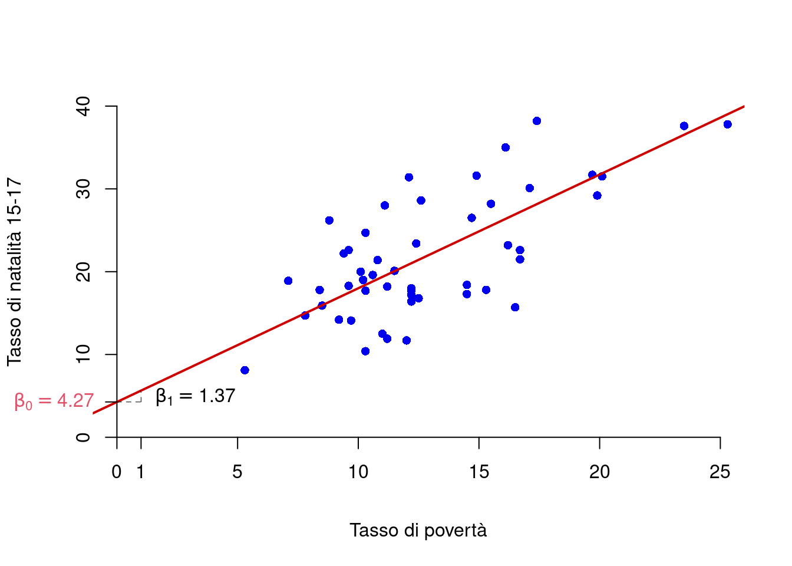
Valutare la bontà di adattamento del modello precedente.
\[\begin{eqnarray*} r&=&\frac{\text{cov}(X,Y)}{\sigma_X\sigma_Y}=\frac{ 24.63 }{ 4.235 \times 7.964 }= 0.7303 \\r^2&=& 0.5333 < 0.75 \end{eqnarray*}\] Il modello non si adatta bene ai dati.
Fornire una interpretazione dei parametri della retta di regressione.
I parametri della retta di regressione sono \(\beta_{0}\) e \(\beta_{1}\). Il primo, \(\beta_{0},\) rappresenta l’intercetta della retta, ovvero il punto in cui la retta interseca l’asse delle ordinate. Il secondo parametro, \(\beta_{1}\), rappresenta la pendenza della retta (chiamato anche coefficiente angolare), ovvero l’incremento verticale corrispondente a un incremento orizzontale unitario e coincide, perciò, con la tangente dell’angolo compreso fra la retta e l’asse delle ascisse.
In questo caso, il tasso di natalità per le under 15, secondo il modello stimato, è dato da \[Y= 4.2673 + 1.3733 X\]
ossia, è composto da un quantitativo fisso di \(4.2673\) di tasso di natalità per le under 15 in un ipotetico stato a con tasso di povertà zero (\(x=0\)), a cui si aggiunge un incremento di \(1.3733\) per ogni incremento unitario del tasso di povertà.
Determinare il residuo per lo stato del Colorado \(i=6\) uguale 6, ossia per \(x=6\).
\[\begin{eqnarray*} \hat y_i &=&\hat\beta_0+\hat\beta_1 x_i=\\ &=& 4.267 + 1.3733 \times 8.8 = 16.35 \\ \hat \varepsilon_i &=& y_i-\hat y_i\\ &=& 26.2 - 16.35 = 9.847 \end{eqnarray*}\]
Verificare l’ipotesi che l’intercetta della retta di regressione sia uguale a zero contro l’alternativa che sia diversa da zero.
\[\begin{eqnarray*} \hat{\sigma_\varepsilon}^2&=&(1-r^2)\hat\sigma_Y^2\\ &=& (1- 0.5333 )\times 63.43 \\ &=& 29.6 \\ S_\varepsilon^2 &=& \frac{n} {n-2} \hat{\sigma_\varepsilon}^2\\ &=& \frac{ 51 } { 51 -2} \hat{\sigma_\varepsilon}^2 \\ &=& \frac{ 51 } { 51 -2} \times 29.6 = 30.81 \end{eqnarray*}\]
E quindi\[\begin{eqnarray*} V(\hat\beta_{0}) &=& \sigma_{\varepsilon}^{2} \left( \frac{1} {n} + \frac{\bar{x}^{2}} {n \hat{\sigma}^{2}_{X}} \right)\\ \widehat{V(\hat\beta_{0})} &=& S_{\varepsilon}^{2}\left( \frac{1} {n} + \frac{\bar{x}^{2}} {n \hat{\sigma}^{2}_{X}} \right)\ \\ &=& 30.81 \times\left( \frac{1} { 51 } + \frac{ 13.12 ^{2}} { 51 \times 17.94 } \right)\\ \widehat{SE(\hat\beta_{0})} &=& \sqrt{ 6.4 }\\ &=& 2.53 \end{eqnarray*}\] \(\fbox{A}\) FORMULAZIONE DELLE IPOTESI
\[\begin{cases} H_0: \beta_0 = \beta_{0;H_0}=0 \\ H_1: \beta_0 \neq \beta_{0;H_0}=0 \end{cases}\]
\(\fbox{B}\) SCELTA E CALCOLO STATISTICA-TEST, \(T\) Test su un coefficiente di regressione: \(\Rightarrow\) t-Test.
\[\begin{eqnarray*} \frac{\hat\beta_{ 0 } - \beta_{ 0 ;H_0}} {\widehat{SE(\hat\beta_{ 0 })}}&\sim&t_{n-2}\\ t_{\text{obs}} &=& \frac{ ( 4.267 - 0 )} { 2.53 } = 1.687 \, . \end{eqnarray*}\]
\(\fbox{C}\) CONCLUSIONE
Siccome \(H_1\) è bilaterale, considereremo \(\alpha/2\), anziché \(\alpha\)
\(\alpha=0.1, 0.05, 0.01, 0.001\) e quindi \(\alpha/2=0.05, 0.025, 0.005, 0.0005\)
I valori critici sono
\(t_{51-2;0.05}=1.6766\); \(t_{51-2;0.025}=2.0096\); \(t_{51-2;0.005}=2.68\); \(t_{51-2;0.0005}=3.5004\)
Siccome \(1.6766<|t_\text{obs}|=1.6868<2.0096\), indecisione sul rifiuto di \(H_0\) al 10%,
\(0.05<p_\text{value}<0.1\), marginalmente significativo \(\fbox{.}\).
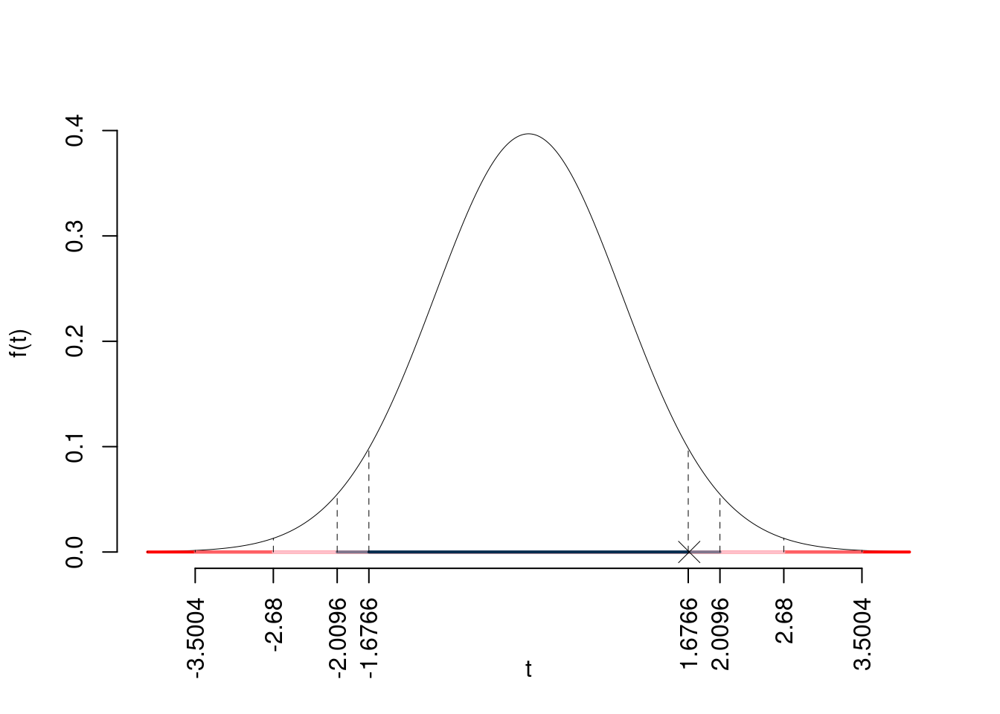
Il \(p_{\text{value}}\) è
\[ p_{\text{value}} = P(|T_{51-2}|>|1.69|)=2P(T_{51-2}>1.69)=0.097990 \]
Attenzione il calcolo del \(p_\text{value}\) con la \(T\) è puramente illustrativo e non può essere riprodotto senza una calcolatrice statistica adeguata.\[ 0.05 < p_\text{value}= 0.097990 \leq 0.1 \]
Verificare l’ipotesi che la pendenza della retta di regressione sia uguale a 0 contro l’alternativa che sia diversa da 0.
\[\begin{eqnarray*} \hat{\sigma_\varepsilon}^2&=&(1-r^2)\hat\sigma_Y^2\\ &=& (1- 0.5333 )\times 63.43 \\ &=& 29.6 \\ S_\varepsilon^2 &=& \frac{n} {n-2} \hat{\sigma_\varepsilon}^2\\ &=& \frac{ 51 } { 51 -2} \hat{\sigma_\varepsilon}^2 \\ &=& \frac{ 51 } { 51 -2} \times 29.6 = 30.81 \end{eqnarray*}\]
E quindi\[\begin{eqnarray*} V(\hat\beta_{1}) &=& \frac{\sigma_{\varepsilon}^{2}} {n \hat{\sigma}^{2}_{X}} \\ \widehat{V(\hat\beta_{1})} &=& \frac{S_{\varepsilon}^{2}} {n \hat{\sigma}^{2}_{X}} \\ &=& \frac{ 30.81 } { 51 \times 17.94 } = 0.0337 \\ \widehat{SE(\hat\beta_{1})} &=& \sqrt{ 0.0337 }\\ &=& 0.1836 \end{eqnarray*}\]
\(\fbox{A}\) FORMULAZIONE DELLE IPOTESI
\[\begin{cases} H_0: \beta_1 = \beta_{1;H_0}=0 \\ H_1: \beta_1 > \beta_{1;H_0}=0 \end{cases}\]
\(\fbox{B}\) SCELTA E CALCOLO STATISTICA-TEST, \(T\) Test su un coefficiente di regressione: \(\Rightarrow\) t-Test.
\[\begin{eqnarray*} \frac{\hat\beta_{ 1 } - \beta_{ 1 ;H_0}} {\widehat{SE(\hat\beta_{ 1 })}}&\sim&t_{n-2}\\ t_{\text{obs}} &=& \frac{ ( 1.373 - 0 )} { 0.1836 } = 7.481 \, . \end{eqnarray*}\]
\(\fbox{C}\) CONCLUSIONE
Consideriamo \(\alpha=0.1, 0.05, 0.01, 0.001\)
I valori critici sono
\(t_{51-2;0.1}=1.2991\); \(t_{51-2;0.05}=1.6766\); \(t_{51-2;0.01}=2.4049\); \(t_{51-2;0.001}=3.2651\)
Siccome \(t_\text{obs}=7.4808>3.2651\), quindi rifiuto \(H_0\) sotto all’1‰,
\(p_\text{value}<0.001\), estremamente significativo \(\fbox{***}\).
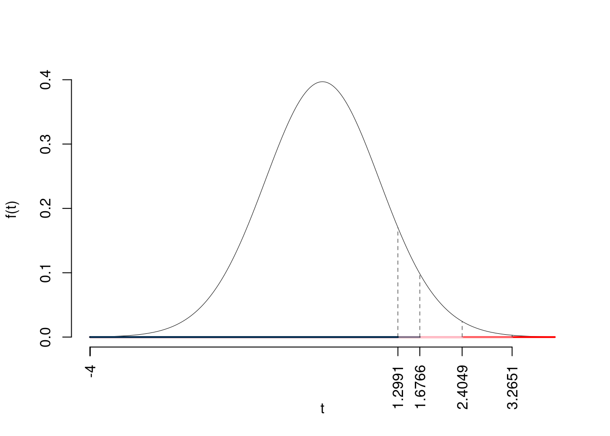
Il \(p_{\text{value}}\) è
\[ p_{\text{value}} = P(T_{51-2}>7.48)=6e-10 \]
Attenzione il calcolo del \(p_\text{value}\) con la \(T\) è puramente illustrativo e non può essere riprodotto senza una calcolatrice statistica adeguata.\[ 0 < p_\text{value}= 6e-10 \leq 0.001 \]
Un software professionale restituisce un output del genere
## state poverty_rate birth_rate
## 1 Alabama 20.1 31.5
## 2 Alaska 7.1 18.9
## 3 Arizona 16.1 35.0
## 4 Arkansas 14.9 31.6
## 5 California 16.7 22.6
## 6 Colorado 8.8 26.2
## 7 Connecticut 9.7 14.1
## 8 Delaware 10.3 24.7
## 9 District of Columbia 22.0 44.8
## 10 Florida 16.2 23.2##
## Call:
## lm(formula = birth_rate ~ poverty_rate, data = data_poverty)
##
## Residuals:
## Min 1Q Median 3Q Max
## -11.227 -3.655 -0.041 2.497 10.515
##
## Coefficients:
## Estimate Std. Error t value Pr(>|t|)
## (Intercept) 4.267 2.530 1.69 0.098 .
## poverty_rate 1.373 0.184 7.48 0.0000000012 ***
## ---
## Signif. codes: 0 '***' 0.001 '**' 0.01 '*' 0.05 '.' 0.1 ' ' 1
##
## Residual standard error: 5.55 on 49 degrees of freedom
## Multiple R-squared: 0.533, Adjusted R-squared: 0.524
## F-statistic: 56 on 1 and 49 DF, p-value: 0.00000000119Esercizio 1
Si sono raccolti i seguenti valori per la variabile indipendente \(X\), indice delle importazioni, e la variabile dipendente \(Y\), indice della produzione industriale (dati artificiali).
| \(i\) | 1 | 2 | 3 | 4 | 5 | 6 | 7 | 8 | 9 | 10 | 11 | 12 | 13 | 14 | 15 | 16 |
| \(x\) | 102 | 105 | 107 | 108 | 109 | 109 | 110 | 112 | 113 | 115 | 116 | 118 | 119 | 120 | 121 | 122 |
| \(y\) | 107 | 108 | 109 | 110 | 111 | 112 | 112 | 116 | 118 | 121 | 123 | 126 | 128 | 130 | 131 | 133 |
1.a Calcolare i parametri \(\beta_{0}\) e \(\beta_{1}\) della retta di regressione in cui \(Y\) è spiegata attraverso \(X\).
(Suggerimento: \(\bar{x} = 112.875~~112.875\); \(\sigma_{X} = 5.89359~~5.8936\); \(\bar{y} = 118.4375\); \(\sigma_{Y} = 8.74620\); \(\text{cov}(X,Y)= 50.74219\)). NB: ora si danno le somme, le somme dei quadrati e dei prodotti: \(\sum_{i=1}^{n} x_{i}\), \(\sum_{i=1}^{n} x_{i}^{2}\), \(\sum_{i=1}^{n} y_{i}\), \(\sum_{i=1}^{n} y_{i}^{2}\), \(\sum_{i=1}^{n} x_{i}\, y_{i}\).
\[\begin{eqnarray*} \widehat{\beta}_{1} &=& r \frac{\sigma_{Y}} {\sigma_{X}} = \frac{\text{cov}(X,Y)} {\sigma_{X}^{2}} = \frac{50.7422} {(5.8936)^{2}} = 1.4609 \\ \widehat{\beta}_{0} &=& \overline{y} - \widehat{\beta}_{1} \overline{x} = 118.4375 - 1.4609 \times 112.875 = -46.4575. \end{eqnarray*}\]
1.b Valutare la bontà di adattamento del modello precedente.
\[\begin{eqnarray*} r &=& \frac{\text{cov}(X,Y)} {\sigma_{X}\ \sigma_{Y}} = \frac{50.7422} {5.8936 \times 8.7462} = 0.9844\\ r^{2} &=& (0.9844)^{2} = 0.969 \end{eqnarray*}\]
L’adattamento del modello ai dati è soddisfacente.
1.c Rappresentare nel diagramma di dispersione la retta di regressione.
Per disegnare velocemente la retta si individuano nel grafico due punti: (1)il punto medio \((\bar{x},\, \bar{y})\), che è già noto; e un solo punto “estremo” nel grafico, che può essere \(x=100\) o \(x=120\) (i numeri “tondi” facilitano il calcolo e il disegno). Tramite l’equazione della retta di regressione si stima la coordinata corrispondente:
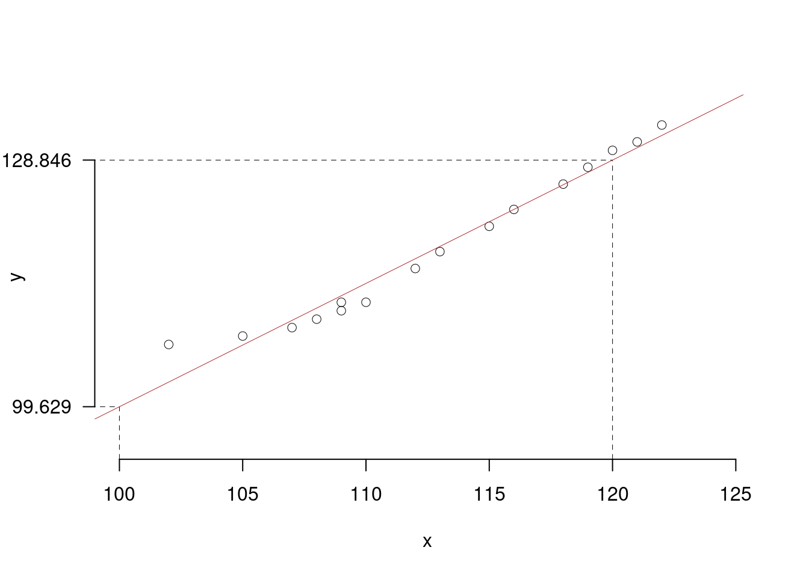
\[\begin{eqnarray*} \widehat{y} &=& -46.457 + 1.461 \,\times\, 100 = 99.629 \qquad \mbox{per $x=100$} \qquad OY= 99.629 \\ \widehat{y} &=& -46.457 + 1.461 \,\times\, 120 = 128.846 \qquad \mbox{per $x=120$} \qquad OY= 128.846\, . \end{eqnarray*}\]
La “piccola” scala degli assi può portare a disegnare una retta non appropriata; l’ispezione visiva aiuta, in questi casi, meglio di quella numerica a disegnare una “buona” retta di regressione.
1.d Fornire una interpretazione dei parametri della retta di regressione.
I parametri della retta di regressione sono \(\beta_{0}\) e \(\beta_{1}\). Il primo, \(\beta_{0},\) rappresenta l’intercetta della retta, ovvero il punto in cui la retta interseca l’asse delle ordinate. Il secondo parametro, \(\beta_{1}\), rappresenta la pendenza della retta (chiamato anche coefficiente angolare), ovvero l’incremento verticale corrispondente a un incremento orizzontale unitario e coincide, perciò, con la tangente dell’angolo compreso fra la retta e l’asse delle ascisse.
Quando si chiede di fornire una interpretazione dei parametri della retta di regressione, tuttavia, si intende che il candidato interpreti anche i valori numerici di \(\beta_{0}\) e \(\beta_{1}\) effettivamente calcolati in precedenza, alla luce del fenomeno descritto da \(X\) e \(Y\). In questo caso, l’indice della produzione industriale, secondo il modello stimato, è dato da \[y= -46.4575 + 1.4609 x\] ossia, è composto da un quantitativo fisso di \(-46.4575\) quando l’indice delle importazione è zero (\(X=0\)), un caso molto raro (ma impossibile nel mondo attuale), a cui si aggiungono 1.4609 per ogni unità in più dell’indice delle importazioni.
1.e Calcolare un indicatore che sintetizzi l’ordine di grandezza dei residui della retta di regressione.
La media quadratica dei residui della retta di regressione coincide con il RMSE e rappresenta una sintesi della dispersione dei residui intorno alla retta di regressione. Si calcola con la formula:
1.f Prevedere il valore dell’indice industriale per un valore dell’indice delle importazioni pari a 120, ossia \(x=120\).
Si determina il valore previsto tramite la retta di regressione:
\[\begin{eqnarray*} \widehat{Y}_{i} &=& -46.4575 + 1.4609\times 120 \\ \widehat{y}_{x=120} &=& 128.8462 \end{eqnarray*}\]
1.g Dal diagramma di dispersione sotto riportato, spiegare se la retta di regressione è adeguata o no a rappresentare il fenomeno.
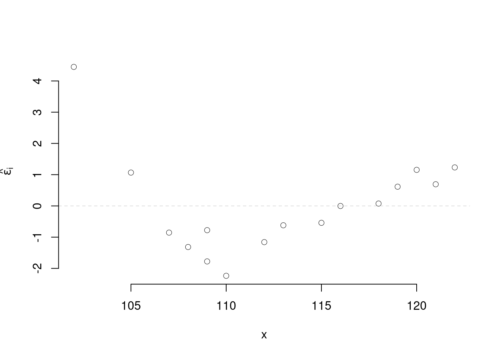
L’ispezione visiva dei dati potrebbe suggerire anche l’esistenza di una certa NON linearità. Non vi sono punti leva; in ogni caso, la non linearità impone di modellarla prima di cercare i punti leva. 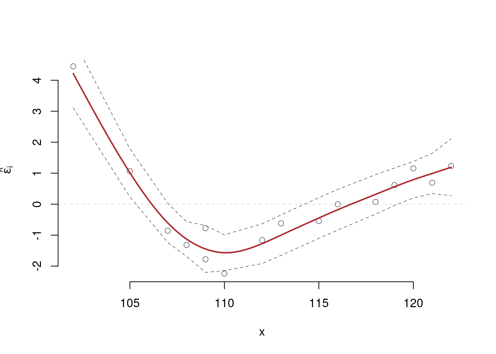
1.h Si consideri il diagramma dei residui sotto riportato. Tracciare la retta dei residui. Commentare la loro forma e spiegare se sono indipendenti o presentano ancora una “struttura”, un andamento peculiare.
La retta dei residui è parallela all’asse delle \(X\), ossia coincide con esso. Il grafico dei residui evidenzia ancora la supposta la NON linearità; infatti, i residui mostrano un andamento “V”, tipica indicazione di non linearità.
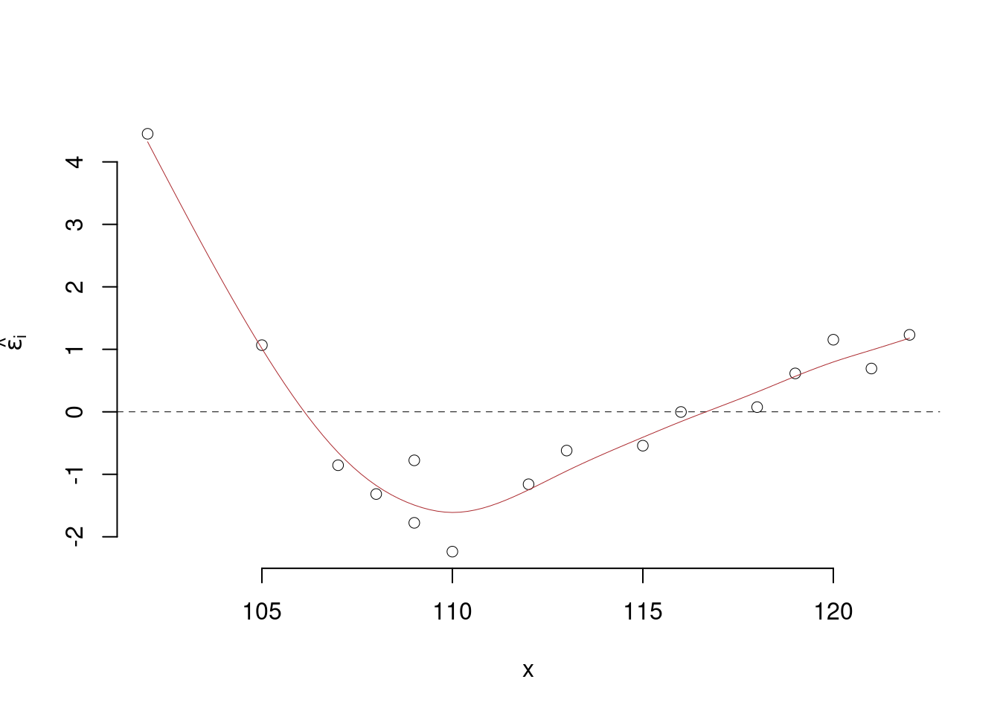
1.i
Verificare
l’ipotesi che la pendenza della retta di regressione sia uguale a
1 contro l’alternativa che sia maggiore di 1
\[\begin{eqnarray*} \hat{\sigma_\varepsilon}^2&=&(1-r^2)\hat\sigma_Y^2\\ &=& (1- 0.969 )\times 76.5 \\ &=& 2.369 \\ S_\varepsilon^2 &=& \frac{n} {n-2} \hat{\sigma_\varepsilon}^2\\ &=& \frac{ 16 } { 16 -2} \hat{\sigma_\varepsilon}^2 \\ &=& \frac{ 16 } { 16 -2} \times 2.369 = 2.707 \end{eqnarray*}\]
E quindi\[\begin{eqnarray*} V(\hat\beta_{1}) &=& \frac{\sigma_{\varepsilon}^{2}} {n \hat{\sigma}^{2}_{X}} \\ \widehat{V(\hat\beta_{1})} &=& \frac{S_{\varepsilon}^{2}} {n \hat{\sigma}^{2}_{X}} \\ &=& \frac{ 2.707 } { 16 \times 34.73 } = 0.004871 \\ \widehat{SE(\hat\beta_{1})} &=& \sqrt{ 0.004871 }\\ &=& 0.06979 \end{eqnarray*}\] \(\fbox{A}\) FORMULAZIONE DELLE IPOTESI
\[\begin{cases} H_0: \beta_1 = \beta_{1;H_0}=1 \\ H_1: \beta_1 > \beta_{1;H_0}=1 \end{cases}\]
\(\fbox{B}\) SCELTA E CALCOLO STATISTICA-TEST, \(T\) Test su un coefficiente di regressione: \(\Rightarrow\) t-Test.
\[\begin{eqnarray*} \frac{\hat\beta_{ 1 } - \beta_{ 1 ;H_0}} {\widehat{SE(\hat\beta_{ 1 })}}&\sim&t_{n-2}\\ t_{\text{obs}} &=& \frac{ ( 1.461 - 1 )} { 0.06979 } = 6.603 \, . \end{eqnarray*}\]
\(\fbox{C}\) CONCLUSIONE
Consideriamo \(\alpha=0.1, 0.05, 0.01, 0.001\)
I valori critici sono
\(t_{16-2;0.1}=1.345\); \(t_{16-2;0.05}=1.7613\); \(t_{16-2;0.01}=2.6245\); \(t_{16-2;0.001}=3.7874\)
Siccome \(t_\text{obs}=6.6033>3.7874\), quindi rifiuto \(H_0\) sotto all’1‰,
\(p_\text{value}<0.001\), estremamente significativo \(\fbox{***}\).
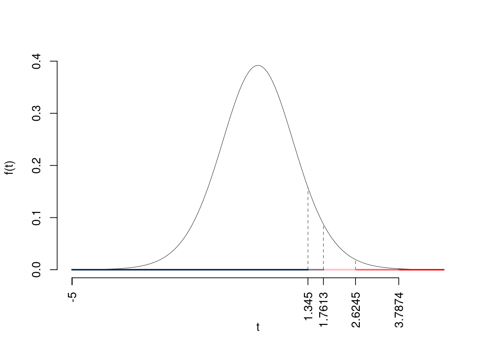
Il \(p_{\text{value}}\) è
\[ p_{\text{value}} = P(T_{16-2}>6.6)=0.000006 \]
Attenzione il calcolo del \(p_\text{value}\) con la \(T\) è puramente illustrativo e non può essere riprodotto senza una calcolatrice statistica adeguata.\[ 0 < p_\text{value}= 0.000006 \leq 0.001 \]
1.j Verificare l’ipotesi che l’intercetta della retta di regressione sia uguale a zero contro l’alternativa che sia minore di zero.
\[\begin{eqnarray*} \hat{\sigma_\varepsilon}^2&=&(1-r^2)\hat\sigma_Y^2\\ &=& (1- 0.969 )\times 76.5 \\ &=& 2.369 \\ S_\varepsilon^2 &=& \frac{n} {n-2} \hat{\sigma_\varepsilon}^2\\ &=& \frac{ 16 } { 16 -2} \hat{\sigma_\varepsilon}^2 \\ &=& \frac{ 16 } { 16 -2} \times 2.369 = 2.707 \end{eqnarray*}\]
E quindi\[\begin{eqnarray*} V(\hat\beta_{0}) &=& \sigma_{\varepsilon}^{2} \left( \frac{1} {n} + \frac{\bar{x}^{2}} {n \hat{\sigma}^{2}_{X}} \right)\\ \widehat{V(\hat\beta_{0})} &=& S_{\varepsilon}^{2}\left( \frac{1} {n} + \frac{\bar{x}^{2}} {n \hat{\sigma}^{2}_{X}} \right)\ \\ &=& 2.707 \times\left( \frac{1} { 16 } + \frac{ 112.9 ^{2}} { 16 \times 34.73 } \right)\\ \widehat{SE(\hat\beta_{0})} &=& \sqrt{ 62.23 }\\ &=& 7.889 \end{eqnarray*}\] \(\fbox{A}\) FORMULAZIONE DELLE IPOTESI
\[\begin{cases} H_0: \beta_0 = \beta_{0;H_0}=0 \\ H_1: \beta_0 < \beta_{0;H_0}=0 \end{cases}\]
\(\fbox{B}\) SCELTA E CALCOLO STATISTICA-TEST, \(T\) Test su un coefficiente di regressione: \(\Rightarrow\) t-Test.
\[\begin{eqnarray*} \frac{\hat\beta_{ 0 } - \beta_{ 0 ;H_0}} {\widehat{SE(\hat\beta_{ 0 })}}&\sim&t_{n-2}\\ t_{\text{obs}} &=& \frac{ ( -46.46 - 0 )} { 7.889 } = -5.889 \, . \end{eqnarray*}\]
\(\fbox{C}\) CONCLUSIONE
Consideriamo \(\alpha=0.1, 0.05, 0.01, 0.001\)
I valori critici sono
\(t_{16-2;0.1}=-1.345\); \(t_{16-2;0.05}=-1.7613\); \(t_{16-2;0.01}=-2.6245\); \(t_{16-2;0.001}=-3.7874\)
Siccome \(t_\text{obs}=-5.8892<-1.345\), quindi rifiuto \(H_0\) sotto all’1‰,
\(p_\text{value}<0.001\), estremamente significativo \(\fbox{***}\).
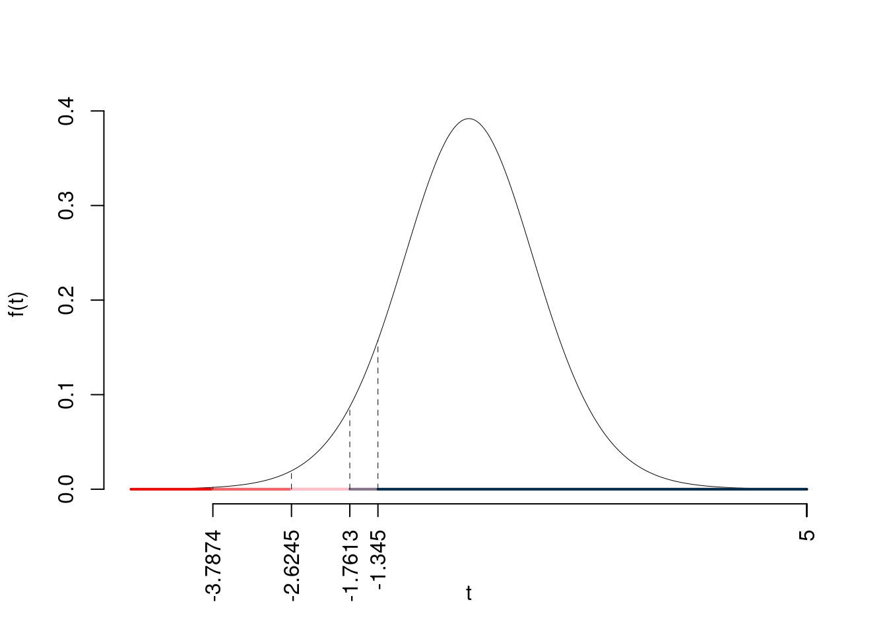
Il \(p_{\text{value}}\) è
\[ p_{\text{value}} = P(T_{16-2}<-5.89)=0.000020 \]
Attenzione il calcolo del \(p_\text{value}\) con la \(T\) è puramente illustrativo e non può essere riprodotto senza una calcolatrice statistica adeguata.\[ 0 < p_\text{value}= 0.000020 \leq 0.001 \]
Esercizio 2
Nella tabella seguente sono riportati i valori del seguente esperimento: numero di ore dopo l’assunzione di un dato farmaco (\(X\)) e incremento percentuale della pressione sistolica (\(Y\)).
| \(x\) | 0 | 1.00 | 2.00 | 3.0 | 4.00 | 5.00 | 6.00 | 7.00 | 8.00 | 9.00 | 10 |
| \(y\) | 10 | 1.42 | -0.53 | 2.6 | 4.02 | 4.49 | 5.72 | 6.54 | 8.91 | 8.74 | 0 |
1.a Calcolare i parametri \(\beta_{0}\) e \(\beta_{1}\) della retta di regressione in cui \(Y\) è spiegata attraverso \(X\). (Suggerimento \(\bar{x} = 5\); \(\hat\sigma_{X} = 3.1623\); \(\bar{y} = 4.7191\); \(\hat\sigma_{Y} = 3.4598\); \(\text{cov}(X,Y)= 1.5618\)).
\[\begin{eqnarray*} \hat\beta_1 &=& \frac{\text{cov}(X,Y)}{\hat\sigma_X^2} \\ &=& \frac{ 1.562 }{ 10 } = 0.1562 \\ \hat\beta_0 &=& \bar y - \hat\beta_1 \bar x\\ &=& 4.719 - 0.1562 \times 5 = 3.938 \end{eqnarray*}\]
1.b Valutare la bontà di adattamento del modello precedente.
\[\begin{eqnarray*} r&=&\frac{\text{cov}(X,Y)}{\sigma_X\sigma_Y}=\frac{ 1.562 }{ 3.162 \times 3.46 }= 0.1427 \\r^2&=& 0.02038 < 0.75 \end{eqnarray*}\] Il modello non si adatta bene ai dati.
1.c Rappresentare nel diagramma di dispersione la retta di regressione.
Per disegnare velocemente la retta si individuano nel grafico due punti: (1)il punto medio \((\bar{x},\, \bar{y})\), che è già noto; e un solo punto “estremo” nel grafico, che può essere \(x=0\) o \(x=10\) (i numeri “tondi” facilitano il calcolo e il disegno). Qui, però, l’asse delle \(X\) presenta l’origine, ossia, il valore \(x=0\) che ha come ordinata il valore di \(\widehat{\beta_{0}}=3.9382\) già calcolato! Diversamente, tramite l’equazione della retta di regressione si stima la coordinata corrispondente:
\[\hat y_{X= 10 }=\hat\beta_0+\hat\beta_1 x= 3.938 + 0.1562 \times 10 = 5.5 \]
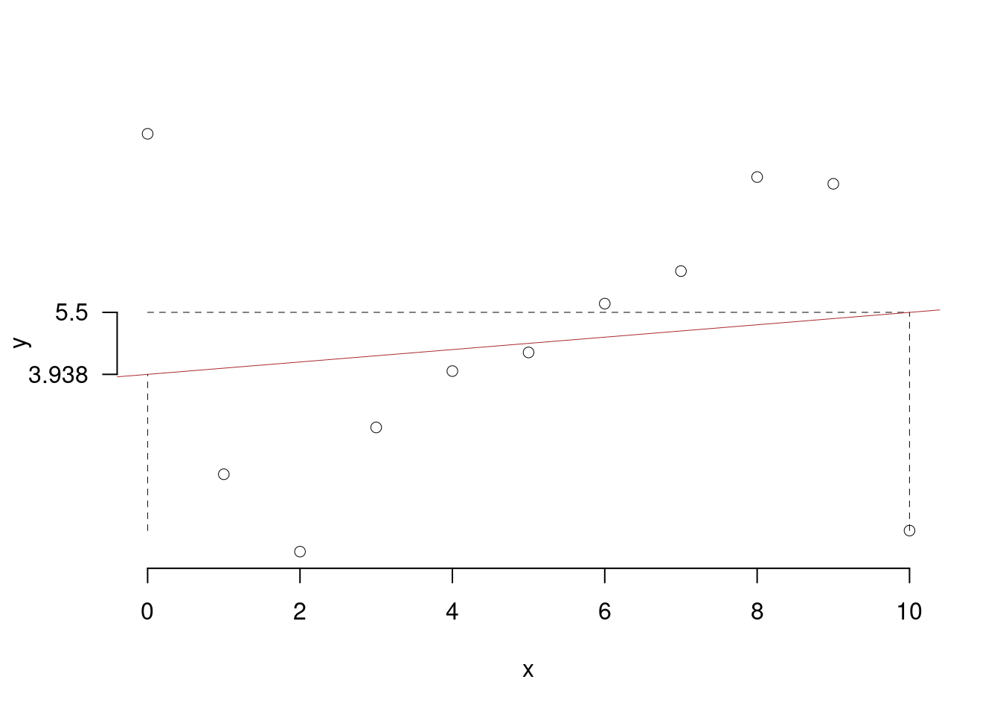
1.d Fornire una interpretazione dei parametri della retta di regressione.
I parametri della retta di regressione sono \(\beta_{0}\) e \(\beta_{1}\). Il primo, \(\beta_{0},\) rappresenta l’intercetta della retta, ovvero il punto in cui la retta interseca l’asse delle ordinate. Il secondo parametro, \(\beta_{1}\), rappresenta la pendenza della retta (chiamato anche coefficiente angolare), ovvero l’incremento verticale corrispondente a un incremento orizzontale unitario e coincide, perciò, con la tangente dell’angolo compreso fra la retta e l’asse delle ascisse.
In questo caso, la variazione percentuale della pressione sistolica, secondo il modello stimato, è dato da \[Y= 3.9382 + 0.1562 X\] ossia, è composta da un quantitativo fisso di \(3.9382\) che si ottiene immediatamente dopo l’assunzione del farmaco (\(X=0\)), che non è privo di significato, a cui si aggiunge un incremento di \(0.1562\) per ogni ora aggiuntiva.
1.e Prevedere il valore relativo a \(x=5\) (notando che \(\bar{x}=5\), con opportune giustificazioni, si può rispondere senza fare necessariamente i conti)
Dalle proprietà della retta di regressione si ha che: \(\widehat{y}_{x=\bar{x}}=\bar{y}=4.7191\). Ovvero: la retta di regressione passa per il punto \((\bar{x},\bar{y})\)
1.f Calcolare l’ordine di grandezza dell’errore di previsione.
L’ordine di grandezza dell’errore di previsione commesso è dato da RMSE che rappresenta una sintesi della dispersione dei residui intorno alla retta di regressione.
1.g Verificare l’ipotesi che la pendenza della retta di regressione sia uguale a 0 contro l’alternativa che sia diversa da 0
\[\begin{eqnarray*} \hat{\sigma_\varepsilon}^2&=&(1-r^2)\hat\sigma_Y^2\\ &=& (1- 0.02038 )\times 11.97 \\ &=& 11.73 \\ S_\varepsilon^2 &=& \frac{n} {n-2} \hat{\sigma_\varepsilon}^2\\ &=& \frac{ 11 } { 11 -2} \hat{\sigma_\varepsilon}^2 \\ &=& \frac{ 11 } { 11 -2} \times 11.73 = 14.33 \end{eqnarray*}\]
E quindi\[\begin{eqnarray*} V(\hat\beta_{1}) &=& \frac{\sigma_{\varepsilon}^{2}} {n \hat{\sigma}^{2}_{X}} \\ \widehat{V(\hat\beta_{1})} &=& \frac{S_{\varepsilon}^{2}} {n \hat{\sigma}^{2}_{X}} \\ &=& \frac{ 14.33 } { 11 \times 10 } = 0.1303 \\ \widehat{SE(\hat\beta_{1})} &=& \sqrt{ 0.1303 }\\ &=& 0.361 \end{eqnarray*}\]
\(\fbox{A}\) FORMULAZIONE DELLE IPOTESI
\[\begin{cases} H_0: \beta_1 = \beta_{1;H_0}=0 \\ H_1: \beta_1 \neq \beta_{1;H_0}=0 \end{cases}\]
\(\fbox{B}\) SCELTA E CALCOLO STATISTICA-TEST, \(T\) Test su un coefficiente di regressione: \(\Rightarrow\) t-Test.
\[\begin{eqnarray*} \frac{\hat\beta_{ 1 } - \beta_{ 1 ;H_0}} {\widehat{SE(\hat\beta_{ 1 })}}&\sim&t_{n-2}\\ t_{\text{obs}} &=& \frac{ ( 0.1562 - 0 )} { 0.361 } = 0.4327 \, . \end{eqnarray*}\]
\(\fbox{C}\) CONCLUSIONE
Siccome \(H_1\) è bilaterale, considereremo \(\alpha/2\), anziché \(\alpha\)
\(\alpha=0.1, 0.05, 0.01, 0.001\) e quindi \(\alpha/2=0.05, 0.025, 0.005, 0.0005\)
I valori critici sono
\(t_{11-2;0.05}=1.8331\); \(t_{11-2;0.025}=2.2622\); \(t_{11-2;0.005}=3.2498\); \(t_{11-2;0.0005}=4.7809\)
Siccome \(|t_\text{obs}|=0.4327<t_{11-2;0.05}=1.8331\), quindi non rifiuto \(H_0\) a nessun livello di significatività,
\(p_\text{value}>0.1\), non significativo
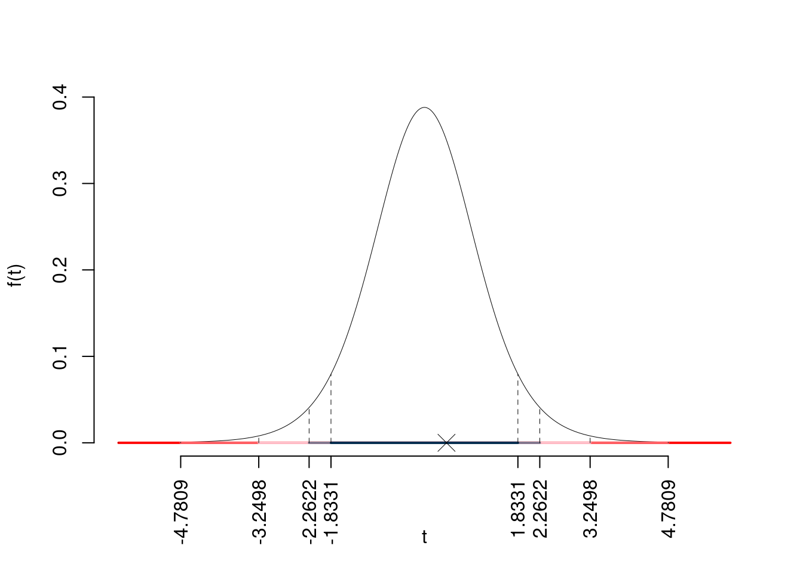
Il \(p_{\text{value}}\) è
\[ p_{\text{value}} = P(|T_{11-2}|>|0.43|)=2P(T_{11-2}>0.43)=0.675431 \]
Attenzione il calcolo del \(p_\text{value}\) con la \(T\) è puramente illustrativo e non può essere riprodotto senza una calcolatrice statistica adeguata.\[ 0.1 < p_\text{value}= 0.675431 \leq 1 \]
1.h
Verificare l’ipotesi che l’intercetta della retta di
regressione sia uguale a zero contro l’alternativa che sia
diversa da zero
\[\begin{eqnarray*} \hat{\sigma_\varepsilon}^2&=&(1-r^2)\hat\sigma_Y^2\\ &=& (1- 0.02036 )\times 11.97 \\ &=& 11.73 \\ S_\varepsilon^2 &=& \frac{n} {n-2} \hat{\sigma_\varepsilon}^2\\ &=& \frac{ 11 } { 11 -2} \hat{\sigma_\varepsilon}^2 \\ &=& \frac{ 11 } { 11 -2} \times 11.73 = 14.33 \end{eqnarray*}\]
E quindi\[\begin{eqnarray*} V(\hat\beta_{0}) &=& \sigma_{\varepsilon}^{2} \left( \frac{1} {n} + \frac{\bar{x}^{2}} {n \hat{\sigma}^{2}_{X}} \right)\\ \widehat{V(\hat\beta_{0})} &=& S_{\varepsilon}^{2}\left( \frac{1} {n} + \frac{\bar{x}^{2}} {n \hat{\sigma}^{2}_{X}} \right)\ \\ &=& 14.33 \times\left( \frac{1} { 11 } + \frac{ 5 ^{2}} { 11 \times 10 } \right)\\ \widehat{SE(\hat\beta_{0})} &=& \sqrt{ 4.56 }\\ &=& 2.135 \end{eqnarray*}\] \(\fbox{A}\) FORMULAZIONE DELLE IPOTESI
\[\begin{cases} H_0: \beta_0 = \beta_{0;H_0}=0 \\ H_1: \beta_0 \neq \beta_{0;H_0}=0 \end{cases}\]
\(\fbox{B}\) SCELTA E CALCOLO STATISTICA-TEST, \(T\) Test su un coefficiente di regressione: \(\Rightarrow\) t-Test.
\[\begin{eqnarray*} \frac{\hat\beta_{ 0 } - \beta_{ 0 ;H_0}} {\widehat{SE(\hat\beta_{ 0 })}}&\sim&t_{n-2}\\ t_{\text{obs}} &=& \frac{ ( 3.938 - 0 )} { 2.135 } = 1.844 \, . \end{eqnarray*}\]
\(\fbox{C}\) CONCLUSIONE
Siccome \(H_1\) è bilaterale, considereremo \(\alpha/2\), anziché \(\alpha\)
\(\alpha=0.1, 0.05, 0.01, 0.001\) e quindi \(\alpha/2=0.05, 0.025, 0.005, 0.0005\)
I valori critici sono
\(t_{11-2;0.05}=1.8331\); \(t_{11-2;0.025}=2.2622\); \(t_{11-2;0.005}=3.2498\); \(t_{11-2;0.0005}=4.7809\)
Siccome \(1.8331<|t_\text{obs}|=1.8442<2.2622\), indecisione sul rifiuto di \(H_0\) al 10%,
\(0.05<p_\text{value}<0.1\), marginalmente significativo \(\fbox{.}\).
Il \(p_{\text{value}}\) è
\[ p_{\text{value}} = P(|T_{11-2}|>|1.84|)=2P(T_{11-2}>1.84)=0.098258 \]
Attenzione il calcolo del \(p_\text{value}\) con la \(T\) è puramente illustrativo e non può essere riprodotto senza una calcolatrice statistica adeguata.\[ 0.05 < p_\text{value}= 0.098258 \leq 0.1 \]
Esercizio 3
L’incasso settimanale di un negozio sia rappresentato dalla variabile (casuale) \(X\) (in migliaia di euro). L’uscita di cassa settimanale sia rappresentata dalla variabile (casuale) \(Y\) (in migliaia di euro). I dati rilevati per 4 mesi sono riportati di séguito.
| \(x\) | 12 | 21 | 25 | 31 | 13 | 15 | 10 | 18 | 19 | 24 | 28 | 32 | 33 | 22 | 24 | 35 |
| \(y\) | 6 | 11 | 15 | 17 | 7 | 8 | 7 | 9 | 10 | 14 | 16 | 20 | 19 | 11 | 14 | 21 |
1.a Calcolare i parametri \(\beta_{0}\) e \(\beta_{1}\) della retta di regressione in cui \(Y\) è spiegata attraverso \(X\). (Suggerimento \(\bar{x} = 22.625\); \(\hat\sigma_{X} = 7.5736\); \(\bar{y} = 12.8125\); \(\hat\sigma_{Y} = 4.7331\); \(\text{cov}(X,Y)= 35.2422\)).
\[\begin{eqnarray*} \hat\beta_1 &=& \frac{\text{cov}(X,Y)}{\hat\sigma_X^2} \\ &=& \frac{ 35.24 }{ 57.36 } = 0.6144 \\ \hat\beta_0 &=& \bar y - \hat\beta_1 \bar x\\ &=& 12.81 - 0.6144 \times 22.625 = -1.089 \end{eqnarray*}\]
1.b Valutare la bontà di adattamento del modello precedente.
\[\begin{eqnarray*} r&=&\frac{\text{cov}(X,Y)}{\sigma_X\sigma_Y}=\frac{ 35.24 }{ 7.574 \times 4.733 }= 0.9831 \\r^2&=& 0.9666 > 0.75 \end{eqnarray*}\] Il modello si adatta bene ai dati.
1.c Rappresentare nel diagramma di dispersione la retta di regressione.
Per disegnare velocemente la retta si individuano nel grafico due punti: (1)il punto medio \((\bar{x},\, \bar{y})\), che è già noto; e un solo punto “estremo” nel grafico, e un solo punto “estremo” nel grafico, che può essere \(x=5\) o \(x=35\) (i numeri “tondi” facilitano il calcolo e il disegno, ma qui \(x=0\) non funziona perché la Y diventa negativa). Tramite l’equazione della retta di regressione si stima la coordinata corrispondente:
\[\hat y_{X= 35 }=\hat\beta_0+\hat\beta_1 x= -1.089 + 0.6144 \times 35 = 20.42 \]
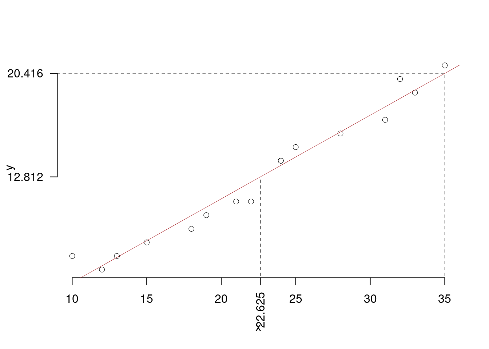
1.d Fornire una interpretazione dei parametri della retta di regressione.
I parametri della retta di regressione sono \(\beta_{0}\) e \(\beta_{1}\). Il primo, \(\beta_{0},\) rappresenta l’intercetta della retta, ovvero il punto in cui la retta interseca l’asse delle ordinate. Il secondo parametro, \(\beta_{1}\), rappresenta la pendenza della retta (chiamato anche coefficiente angolare), ovvero l’incremento verticale corrispondente a un incremento orizzontale unitario e coincide, perciò, con la tangente dell’angolo compreso fra la retta e l’asse delle ascisse.
In questo caso, la variazione percentuale della pressione sistolica, secondo il modello stimato, è dato da \[Y= -1.0885 + 0.6144 X\]
ossia, è composta da un quantitativo fisso di \(-1.0885\) (migliaia di euro) quando l’uscita di cassa è zero (\(X=0\)), a cui si aggiungono \(0.6144\) migliaia di euro per ogni unità (in migliaia di euro) di incasso aggiunto.
1.e
Prevedere il valore dell’uscita per
un incasso di 30 migliaia di euro, ossia \(x=30\) e fornire l’ordine di grandezza dell’errore
di previsione commesso.
\[\hat y_{X= 30 }=\hat\beta_0+\hat\beta_1 x= -1.089 + 0.6144 \times 30 = 17.34 \]
\[ \hat\sigma_{\varepsilon}=\hat\sigma_Y\sqrt{1-r^2}= 4.7331\sqrt{1-0.9666}=0.8656 \]
1.f Verificare l’ipotesi che la pendenza della retta di regressione sia uguale a 1/2 contro l’alternativa che sia diversa da 1/2.
\[\begin{eqnarray*} \hat{\sigma_\varepsilon}^2&=&(1-r^2)\hat\sigma_Y^2\\ &=& (1- 0.9666 )\times 22.4 \\ &=& 0.7492 \\ S_\varepsilon^2 &=& \frac{n} {n-2} \hat{\sigma_\varepsilon}^2\\ &=& \frac{ 16 } { 16 -2} \hat{\sigma_\varepsilon}^2 \\ &=& \frac{ 16 } { 16 -2} \times 0.7492 = 0.8562 \end{eqnarray*}\]
E quindi\[\begin{eqnarray*} V(\hat\beta_{1}) &=& \frac{\sigma_{\varepsilon}^{2}} {n \hat{\sigma}^{2}_{X}} \\ \widehat{V(\hat\beta_{1})} &=& \frac{S_{\varepsilon}^{2}} {n \hat{\sigma}^{2}_{X}} \\ &=& \frac{ 0.8562 } { 16 \times 57.36 } = 0.0009329 \\ \widehat{SE(\hat\beta_{1})} &=& \sqrt{ 0.0009329 }\\ &=& 0.03054 \end{eqnarray*}\]
\(\fbox{A}\) FORMULAZIONE DELLE IPOTESI
\[\begin{cases} H_0: \beta_1 = \beta_{1;H_0}=0.5 \\ H_1: \beta_1 \neq \beta_{1;H_0}=0.5 \end{cases}\]
\(\fbox{B}\) SCELTA E CALCOLO STATISTICA-TEST, \(T\) Test su un coefficiente di regressione: \(\Rightarrow\) t-Test.
\[\begin{eqnarray*} \frac{\hat\beta_{ 1 } - \beta_{ 1 ;H_0}} {\widehat{SE(\hat\beta_{ 1 })}}&\sim&t_{n-2}\\ t_{\text{obs}} &=& \frac{ ( 0.6144 - 0.5 )} { 0.03054 } = 3.746 \, . \end{eqnarray*}\]
\(\fbox{C}\) CONCLUSIONE
Siccome \(H_1\) è bilaterale, considereremo \(\alpha/2\), anziché \(\alpha\)
\(\alpha=0.1, 0.05, 0.01, 0.001\) e quindi \(\alpha/2=0.05, 0.025, 0.005, 0.0005\)
I valori critici sono
\(t_{16-2;0.05}=1.7613\); \(t_{16-2;0.025}=2.1448\); \(t_{16-2;0.005}=2.9768\); \(t_{16-2;0.0005}=4.1405\)
Siccome \(2.9768<|t_\text{obs}|=3.7457<4.1405\), quindi rifiuto \(H_0\) all’1%,
\(0.001<p_\text{value}<0.01\), molto significativo \(\fbox{**}\).
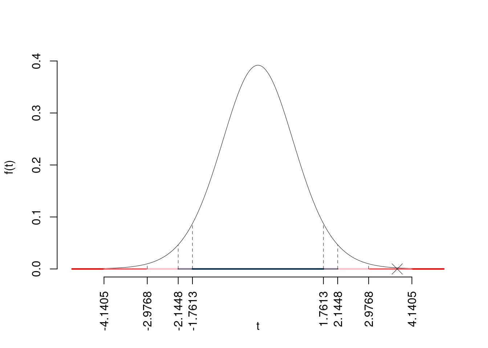
Il \(p_{\text{value}}\) è
\[ p_{\text{value}} = P(|T_{16-2}|>|3.75|)=2P(T_{16-2}>3.75)=0.002172 \]
Attenzione il calcolo del \(p_\text{value}\) con la \(T\) è puramente illustrativo e non può essere riprodotto senza una calcolatrice statistica adeguata.\[ 0.001 < p_\text{value}= 0.002172 \leq 0.01 \]
1.g
Verificare l’ipotesi che l’intercetta della retta di
regressione sia uguale a zero contro l’alternativa che sia
minore di zero.
\[\begin{eqnarray*} \hat{\sigma_\varepsilon}^2&=&(1-r^2)\hat\sigma_Y^2\\ &=& (1- 0.9665 )\times 22.4 \\ &=& 0.7492 \\ S_\varepsilon^2 &=& \frac{n} {n-2} \hat{\sigma_\varepsilon}^2\\ &=& \frac{ 16 } { 16 -2} \hat{\sigma_\varepsilon}^2 \\ &=& \frac{ 16 } { 16 -2} \times 0.7492 = 0.8562 \end{eqnarray*}\]
E quindi\[\begin{eqnarray*} V(\hat\beta_{0}) &=& \sigma_{\varepsilon}^{2} \left( \frac{1} {n} + \frac{\bar{x}^{2}} {n \hat{\sigma}^{2}_{X}} \right)\\ \widehat{V(\hat\beta_{0})} &=& S_{\varepsilon}^{2}\left( \frac{1} {n} + \frac{\bar{x}^{2}} {n \hat{\sigma}^{2}_{X}} \right)\ \\ &=& 0.8562 \times\left( \frac{1} { 16 } + \frac{ 22.62 ^{2}} { 16 \times 57.36 } \right)\\ \widehat{SE(\hat\beta_{0})} &=& \sqrt{ 0.5311 }\\ &=& 0.7288 \end{eqnarray*}\] \(\fbox{A}\) FORMULAZIONE DELLE IPOTESI
\[\begin{cases} H_0: \beta_0 = \beta_{0;H_0}=0 \\ H_1: \beta_0 < \beta_{0;H_0}=0 \end{cases}\]
\(\fbox{B}\) SCELTA E CALCOLO STATISTICA-TEST, \(T\) Test su un coefficiente di regressione: \(\Rightarrow\) t-Test.
\[\begin{eqnarray*} \frac{\hat\beta_{ 0 } - \beta_{ 0 ;H_0}} {\widehat{SE(\hat\beta_{ 0 })}}&\sim&t_{n-2}\\ t_{\text{obs}} &=& \frac{ ( -1.089 - 0 )} { 0.7288 } = -1.494 \, . \end{eqnarray*}\]
\(\fbox{C}\) CONCLUSIONE
Consideriamo \(\alpha=0.1, 0.05, 0.01, 0.001\)
I valori critici sono
\(t_{16-2;0.1}=-1.345\); \(t_{16-2;0.05}=-1.7613\); \(t_{16-2;0.01}=-2.6245\); \(t_{16-2;0.001}=-3.7874\)
Siccome \(-3.7874<t_\text{obs}=-1.4936<-2.6245\), indecisione sul rifiuto di \(H_0\) al 10%,
\(0.05<p_\text{value}<0.1\), marginalmente significativo \(\fbox{.}\).
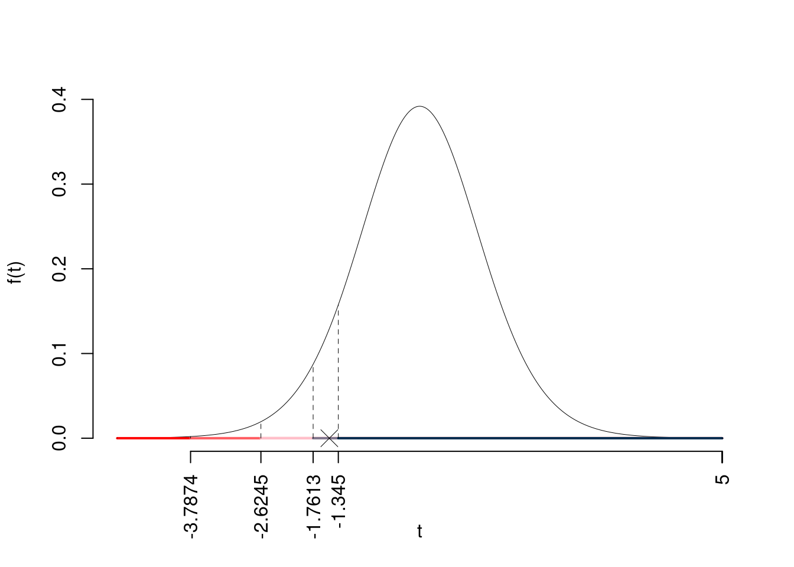
Il \(p_{\text{value}}\) è
\[ p_{\text{value}} = P(T_{16-2}<-1.49)=0.078734 \]
Attenzione il calcolo del \(p_\text{value}\) con la \(T\) è puramente illustrativo e non può essere riprodotto senza una calcolatrice statistica adeguata.\[ 0.05 < p_\text{value}= 0.078734 \leq 0.1 \]
Esercizio 4
Si esaminano 15 aziende e si rileva, per ognuna di esse, il numero di addetti (\(X\)) e il fatturato (\(Y\) in unità convenzionali). I risultati sono riportati nella tabella seguente.
| \(x\) | 20 | 30 | 40 | 50 | 60 | 70 | 80 | 90 | 100 | 110 | 120 | 130 | 140 | 150 | 160 |
| \(y\) | 25 | 40 | 50 | 64 | 75 | 85 | 100 | 105 | 120 | 145 | 178 | 210 | 260 | 315 | 380 |
1.a Calcolare i parametri \(\beta_{0}\) e \(\beta_{1}\) della retta di regressione in cui \(Y\) è spiegata attraverso \(X\). (Suggerimento \(\bar{x} = 90\); \(\hat\sigma_{X} = 43.2049\); \(\bar{y} = 143.4667\); \(\hat\sigma_{Y} = 102.1077\); \(\text{cov}(X,Y)= 4145.3333\)).
\[\begin{eqnarray*} \hat\beta_1 &=& \frac{\text{cov}(X,Y)}{\hat\sigma_X^2} \\ &=& \frac{ 4145 }{ 1867 } = 2.221 \\ \hat\beta_0 &=& \bar y - \hat\beta_1 \bar x\\ &=& 143.5 - 2.2207 \times 90 = -56.4 \end{eqnarray*}\]
1.b Valutare la bontà di adattamento del modello precedente.
\[\begin{eqnarray*} r&=&\frac{\text{cov}(X,Y)}{\sigma_X\sigma_Y}=\frac{ 4145 }{ 43.2 \times 102.1 }= 0.9397 \\r^2&=& 0.8829 > 0.75 \end{eqnarray*}\] Il modello si adatta bene ai dati.
1.c Rappresentare nel diagramma di dispersione la retta di regressione.
Per disegnare velocemente la retta si individuano nel grafico due punti: (1)il punto medio \((\bar{x},\, \bar{y})\), che è già noto; e un solo punto “estremo” nel grafico, e un solo punto “estremo” nel nel grafico, che può essere \(x=160\) o \(x=40\) (un numero inferiore dà un \(y\) negativo). Quest’ultimo NON conviene perché “esce” dagli assi. Tramite l’equazione della retta di regressione si stima la coordinata corrispondente:
\[\hat y_{X= 40 }=\hat\beta_0+\hat\beta_1 x= -56.4 + 2.2207 \times 40 = 32.43 \]
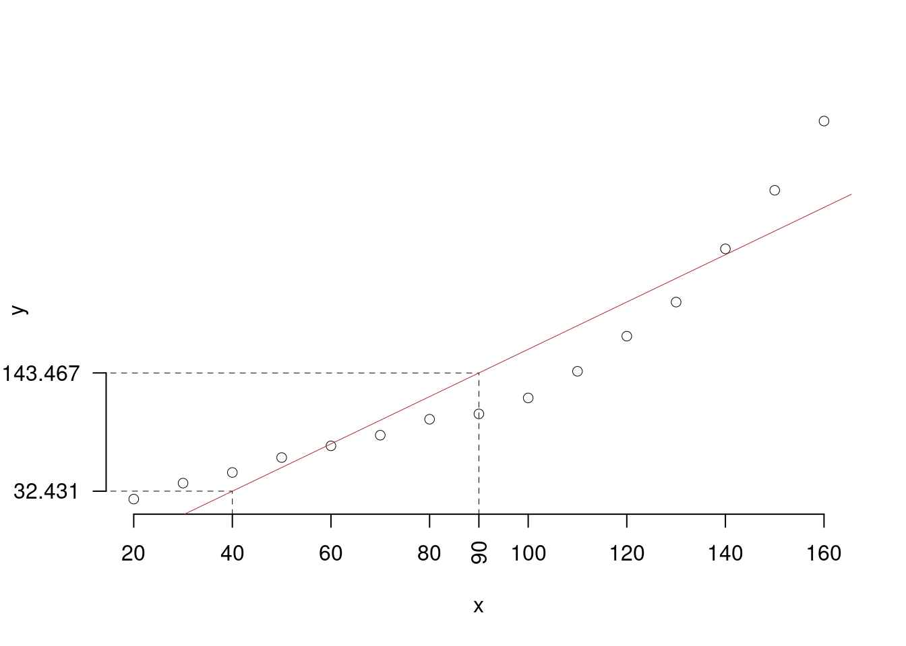
1.d Fornire una interpretazione dei parametri della retta di regressione.
I parametri della retta di regressione sono \(\beta_{0}\) e \(\beta_{1}\). Il primo, \(\beta_{0},\) rappresenta l’intercetta della retta, ovvero il punto in cui la retta interseca l’asse delle ordinate. Il secondo parametro, \(\beta_{1}\), rappresenta la pendenza della retta (chiamato anche coefficiente angolare), ovvero l’incremento verticale corrispondente a un incremento orizzontale unitario e coincide, perciò, con la tangente dell’angolo compreso fra la retta e l’asse delle ascisse.
In questo caso, il numero di addetti, secondo il modello stimato, è dato da \[y= -56.3976 + 2.2207 x\] ossia, è composto da un quantitativo fisso di \(-56.3976\) di fatturato quando il numero degli addetti è è zero (\(X=0\)) che corrisponde al costo di una impresa senza addetti, a cui si aggiungono 2.2207 per ogni unità di lavoro aggiuntiva.
1.e Prevedere il valore del fatturato per un numero di addetti pari a 75 unità, ossia per \(x=75\).
\[\hat y_{X= 75 }=\hat\beta_0+\hat\beta_1 x= -56.4 + 2.2207 \times 75 = 110.2 \]
1.f Verificare l’ipotesi che la pendenza della retta di regressione sia uguale a 2 contro l’alternativa che sia maggiore di 2, sapendo che
\[\begin{eqnarray*} \hat{\sigma_\varepsilon}^2&=&(1-r^2)\hat\sigma_Y^2\\ &=& (1- 0.8829 )\times 10426 \\ &=& 1220 \\ S_\varepsilon^2 &=& \frac{n} {n-2} \hat{\sigma_\varepsilon}^2\\ &=& \frac{ 15 } { 15 -2} \hat{\sigma_\varepsilon}^2 \\ &=& \frac{ 15 } { 15 -2} \times 1220 = 1408 \end{eqnarray*}\]
E quindi\[\begin{eqnarray*} V(\hat\beta_{1}) &=& \frac{\sigma_{\varepsilon}^{2}} {n \hat{\sigma}^{2}_{X}} \\ \widehat{V(\hat\beta_{1})} &=& \frac{S_{\varepsilon}^{2}} {n \hat{\sigma}^{2}_{X}} \\ &=& \frac{ 1408 } { 15 \times 1867 } = 0.05029 \\ \widehat{SE(\hat\beta_{1})} &=& \sqrt{ 0.05029 }\\ &=& 0.2243 \end{eqnarray*}\]
\(\fbox{A}\) FORMULAZIONE DELLE IPOTESI
\[\begin{cases} H_0: \beta_1 = \beta_{1;H_0}=2 \\ H_1: \beta_1 > \beta_{1;H_0}=2 \end{cases}\]
\(\fbox{B}\) SCELTA E CALCOLO STATISTICA-TEST, \(T\) Test su un coefficiente di regressione: \(\Rightarrow\) t-Test.
\[\begin{eqnarray*} \frac{\hat\beta_{ 1 } - \beta_{ 1 ;H_0}} {\widehat{SE(\hat\beta_{ 1 })}}&\sim&t_{n-2}\\ t_{\text{obs}} &=& \frac{ ( 2.221 - 2 )} { 0.2243 } = 0.9842 \, . \end{eqnarray*}\]
\(\fbox{C}\) CONCLUSIONE
Consideriamo \(\alpha=0.1, 0.05, 0.01, 0.001\)
I valori critici sono
\(t_{15-2;0.1}=1.3502\); \(t_{15-2;0.05}=1.7709\); \(t_{15-2;0.01}=2.6503\); \(t_{15-2;0.001}=3.852\)
Siccome \(t_\text{obs}=0.9842<t_{15-2;0.1}=1.3502\), quindi non rifiuto \(H_0\) a nessun livello di significatività,
\(p_\text{value}>0.1\), non significativo
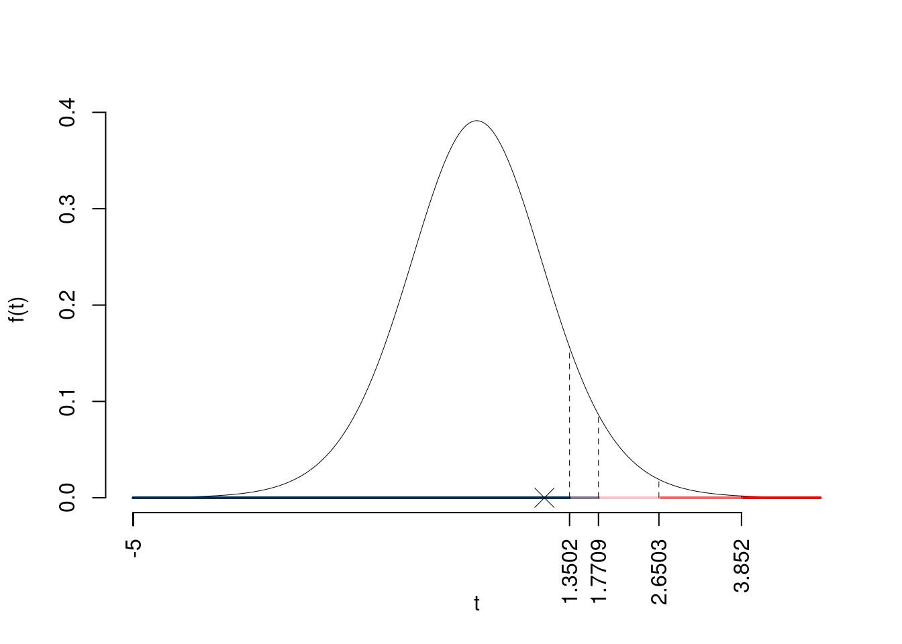
Il \(p_{\text{value}}\) è
\[ p_{\text{value}} = P(T_{15-2}>0.98)=0.171488 \]
Attenzione il calcolo del \(p_\text{value}\) con la \(T\) è puramente illustrativo e non può essere riprodotto senza una calcolatrice statistica adeguata.\[ 0.1 < p_\text{value}= 0.171488 \leq 1 \]
1.g
Verificare l’ipotesi che l’intercetta della retta di
regressione sia uguale a zero contro l’alternativa che sia
minore di zero.
\[\begin{eqnarray*} \hat{\sigma_\varepsilon}^2&=&(1-r^2)\hat\sigma_Y^2\\ &=& (1- 0.883 )\times 10426 \\ &=& 1220 \\ S_\varepsilon^2 &=& \frac{n} {n-2} \hat{\sigma_\varepsilon}^2\\ &=& \frac{ 15 } { 15 -2} \hat{\sigma_\varepsilon}^2 \\ &=& \frac{ 15 } { 15 -2} \times 1220 = 1408 \end{eqnarray*}\]
E quindi\[\begin{eqnarray*} V(\hat\beta_{0}) &=& \sigma_{\varepsilon}^{2} \left( \frac{1} {n} + \frac{\bar{x}^{2}} {n \hat{\sigma}^{2}_{X}} \right)\\ \widehat{V(\hat\beta_{0})} &=& S_{\varepsilon}^{2}\left( \frac{1} {n} + \frac{\bar{x}^{2}} {n \hat{\sigma}^{2}_{X}} \right)\ \\ &=& 1408 \times\left( \frac{1} { 15 } + \frac{ 90 ^{2}} { 15 \times 1867 } \right)\\ \widehat{SE(\hat\beta_{0})} &=& \sqrt{ 501.2 }\\ &=& 22.39 \end{eqnarray*}\] \(\fbox{A}\) FORMULAZIONE DELLE IPOTESI
\[\begin{cases} H_0: \beta_0 = \beta_{0;H_0}=0 \\ H_1: \beta_0 < \beta_{0;H_0}=0 \end{cases}\]
\(\fbox{B}\) SCELTA E CALCOLO STATISTICA-TEST, \(T\) Test su un coefficiente di regressione: \(\Rightarrow\) t-Test.
\[\begin{eqnarray*} \frac{\hat\beta_{ 0 } - \beta_{ 0 ;H_0}} {\widehat{SE(\hat\beta_{ 0 })}}&\sim&t_{n-2}\\ t_{\text{obs}} &=& \frac{ ( -56.4 - 0 )} { 22.39 } = -2.519 \, . \end{eqnarray*}\]
\(\fbox{C}\) CONCLUSIONE
Consideriamo \(\alpha=0.1, 0.05, 0.01, 0.001\)
I valori critici sono
\(t_{15-2;0.1}=-1.3502\); \(t_{15-2;0.05}=-1.7709\); \(t_{15-2;0.01}=-2.6503\); \(t_{15-2;0.001}=-3.852\)
Siccome \(-2.6503<t_\text{obs}=-2.5191<-1.7709\), quindi rifiuto \(H_0\) al 5%,
\(0.01<p_\text{value}<0.05\), significativo \(\fbox{*}\).
Il \(p_{\text{value}}\) è
\[ p_{\text{value}} = P(T_{15-2}<-2.52)=0.012824 \]
Attenzione il calcolo del \(p_\text{value}\) con la \(T\) è puramente illustrativo e non può essere riprodotto senza una calcolatrice statistica adeguata.\[ 0.01 < p_\text{value}= 0.012824 \leq 0.05 \]
Esercizio 5
Nel maggio del 1973 per 15 giorni consecutivi si sono osservati i valori di concentrazione di ozono (espressa in parti per milione) a New York \(Y\) e temperatura a terra, \(X\) (espressa in gradi Fahrenheit), come espresso nella seguente tabella.
| \(x\) | 20 | 30 | 40 | 50 | 60 | 70 | 80 | 90 | 100 | 110 | 120 | 130 | 140 | 150 | 160 |
| \(y\) | 25 | 40 | 50 | 64 | 75 | 85 | 100 | 105 | 120 | 145 | 178 | 210 | 260 | 315 | 380 |
1.a Calcolare i parametri \(\beta_{0}\) e \(\beta_{1}\) della retta di regressione in cui \(Y\) è spiegata attraverso \(X\). (Suggerimento \(\bar{x} = 90\); \(\hat\sigma_{X} = 43.2049\); \(\bar{y} = 143.4667\); \(\hat\sigma_{Y} = 102.1077\); \(\text{cov}(X,Y)= 4145.3333\)).
\[\begin{eqnarray*} \hat\beta_1 &=& \frac{\text{cov}(X,Y)}{\hat\sigma_X^2} \\ &=& \frac{ 4145 }{ 1867 } = 2.221 \\ \hat\beta_0 &=& \bar y - \hat\beta_1 \bar x\\ &=& 143.5 - 2.2207 \times 90 = -56.4 \end{eqnarray*}\]
1.b Valutare la bontà di adattamento del modello precedente.
\[\begin{eqnarray*} r&=&\frac{\text{cov}(X,Y)}{\sigma_X\sigma_Y}=\frac{ 4145 }{ 43.2 \times 102.1 }= 0.9397 \\r^2&=& 0.8829 > 0.75 \end{eqnarray*}\] Il modello si adatta bene ai dati.
Nota altre domande simili alle precedenti non vengono riportate
1.c
Verificare l’ipotesi che l’intercetta della retta di
regressione sia uguale a zero contro l’alternativa che sia
minore di zero.
\[\begin{eqnarray*} \hat{\sigma_\varepsilon}^2&=&(1-r^2)\hat\sigma_Y^2\\ &=& (1- 0.8829 )\times 10426 \\ &=& 1220 \\ S_\varepsilon^2 &=& \frac{n} {n-2} \hat{\sigma_\varepsilon}^2\\ &=& \frac{ 15 } { 15 -2} \hat{\sigma_\varepsilon}^2 \\ &=& \frac{ 15 } { 15 -2} \times 1220 = 1408 \end{eqnarray*}\]
E quindi\[\begin{eqnarray*} V(\hat\beta_{0}) &=& \sigma_{\varepsilon}^{2} \left( \frac{1} {n} + \frac{\bar{x}^{2}} {n \hat{\sigma}^{2}_{X}} \right)\\ \widehat{V(\hat\beta_{0})} &=& S_{\varepsilon}^{2}\left( \frac{1} {n} + \frac{\bar{x}^{2}} {n \hat{\sigma}^{2}_{X}} \right)\ \\ &=& 1408 \times\left( \frac{1} { 15 } + \frac{ 90 ^{2}} { 15 \times 1867 } \right)\\ \widehat{SE(\hat\beta_{0})} &=& \sqrt{ 501.2 }\\ &=& 22.39 \end{eqnarray*}\] \(\fbox{A}\) FORMULAZIONE DELLE IPOTESI
\[\begin{cases} H_0: \beta_0 = \beta_{0;H_0}=0 \\ H_1: \beta_0 < \beta_{0;H_0}=0 \end{cases}\]
\(\fbox{B}\) SCELTA E CALCOLO STATISTICA-TEST, \(T\) Test su un coefficiente di regressione: \(\Rightarrow\) t-Test.
\[\begin{eqnarray*} \frac{\hat\beta_{ 0 } - \beta_{ 0 ;H_0}} {\widehat{SE(\hat\beta_{ 0 })}}&\sim&t_{n-2}\\ t_{\text{obs}} &=& \frac{ ( -56.4 - 0 )} { 22.39 } = -2.519 \, . \end{eqnarray*}\]
\(\fbox{C}\) CONCLUSIONE
Consideriamo \(\alpha=0.1, 0.05, 0.01, 0.001\)
I valori critici sono
\(t_{15-2;0.1}=-1.3502\); \(t_{15-2;0.05}=-1.7709\); \(t_{15-2;0.01}=-2.6503\); \(t_{15-2;0.001}=-3.852\)
Siccome \(-2.6503<t_\text{obs}=-2.5191<-1.7709\), quindi rifiuto \(H_0\) al 5%,
\(0.01<p_\text{value}<0.05\), significativo \(\fbox{*}\).
Il \(p_{\text{value}}\) è
\[ p_{\text{value}} = P(T_{15-2}<-2.52)=0.012824 \]
Attenzione il calcolo del \(p_\text{value}\) con la \(T\) è puramente illustrativo e non può essere riprodotto senza una calcolatrice statistica adeguata.\[ 0.01 < p_\text{value}= 0.012824 \leq 0.05 \]
Esercizio 6
Il reddito pro capite, in migliaia di euro, relativo a 16 aree amministrative rilevato nell’anno 1989, \(X\), e rilevato nell’anno 1999, \(Y\), sono riportati nella tabella seguente.
| \(x\) | 47.8 | 27.9 | 36.6 | 54.2 | 41.9 | 44.4 | 54.3 | 42.3 | 41.5 | 43.2 | 56.3 | 63.3 | 46.8 | 45.2 | 38.7 | 36.3 |
| \(y\) | 63.0 | 33.4 | 42.0 | 72.8 | 52.0 | 54.0 | 63.4 | 60.7 | 54.4 | 55.5 | 74.0 | 79.2 | 53.1 | 59.6 | 52.0 | 47.2 |
1.a Calcolare i parametri \(\beta_{0}\) e \(\beta_{1}\) della retta di regressione in cui \(Y\) è spiegata attraverso \(X\). (Suggerimento \(\bar{x} = 45.0438\); \(\hat\sigma_{X} = 8.4996\); \(\bar{y} = 57.2687\); \(\hat\sigma_{Y} = 11.4263\); \(\text{cov}(X,Y)= 92.4239\)).
\[\begin{eqnarray*} \hat\beta_1 &=& \frac{\text{cov}(X,Y)}{\hat\sigma_X^2} \\ &=& \frac{ 92.42 }{ 72.24 } = 1.279 \\ \hat\beta_0 &=& \bar y - \hat\beta_1 \bar x\\ &=& 57.27 - 1.2793 \times 45.0438 = -0.3573 \end{eqnarray*}\]
1.b Valutare la bontà di adattamento del modello precedente.
\[\begin{eqnarray*} r&=&\frac{\text{cov}(X,Y)}{\sigma_X\sigma_Y}=\frac{ 92.42 }{ 8.5 \times 11.43 }= 0.9517 \\r^2&=& 0.9056 > 0.75 \end{eqnarray*}\] Il modello si adatta bene ai dati.
1.c Determinare il residuo (o l’errore) derivante dalla previsione, calcolata con il modello di regressione in \(x=54.3\).
\[\begin{eqnarray*} \hat y_i &=&\hat\beta_0+\hat\beta_1 x_i=\\ &=& -0.3573 + 1.2793 \times 54.3 = 69.11 \\ \hat \varepsilon_i &=& y_i-\hat y_i\\ &=& 63.4 - 69.11 = -5.711 \end{eqnarray*}\]
Nota altre domande simili alle precedenti non vengono riportate
1.d
Verificare
l’ipotesi che la pendenza della retta di regressione sia uguale a 0
contro l’alternativa che sia maggiore di 0.
\[\begin{eqnarray*} \hat{\sigma_\varepsilon}^2&=&(1-r^2)\hat\sigma_Y^2\\ &=& (1- 0.9056 )\times 130.6 \\ &=& 12.32 \\ S_\varepsilon^2 &=& \frac{n} {n-2} \hat{\sigma_\varepsilon}^2\\ &=& \frac{ 16 } { 16 -2} \hat{\sigma_\varepsilon}^2 \\ &=& \frac{ 16 } { 16 -2} \times 12.32 = 14.08 \end{eqnarray*}\]
E quindi\[\begin{eqnarray*} V(\hat\beta_{1}) &=& \frac{\sigma_{\varepsilon}^{2}} {n \hat{\sigma}^{2}_{X}} \\ \widehat{V(\hat\beta_{1})} &=& \frac{S_{\varepsilon}^{2}} {n \hat{\sigma}^{2}_{X}} \\ &=& \frac{ 14.08 } { 16 \times 72.24 } = 0.01218 \\ \widehat{SE(\hat\beta_{1})} &=& \sqrt{ 0.01218 }\\ &=& 0.1104 \end{eqnarray*}\]
\(\fbox{A}\) FORMULAZIONE DELLE IPOTESI
\[\begin{cases} H_0: \beta_1 = \beta_{1;H_0}=0 \\ H_1: \beta_1 > \beta_{1;H_0}=0 \end{cases}\]
\(\fbox{B}\) SCELTA E CALCOLO STATISTICA-TEST, \(T\) Test su un coefficiente di regressione: \(\Rightarrow\) t-Test.
\[\begin{eqnarray*} \frac{\hat\beta_{ 1 } - \beta_{ 1 ;H_0}} {\widehat{SE(\hat\beta_{ 1 })}}&\sim&t_{n-2}\\ t_{\text{obs}} &=& \frac{ ( 1.279 - 0 )} { 0.1104 } = 11.59 \, . \end{eqnarray*}\]
\(\fbox{C}\) CONCLUSIONE
Consideriamo \(\alpha=0.1, 0.05, 0.01, 0.001\)
I valori critici sono
\(t_{16-2;0.1}=1.345\); \(t_{16-2;0.05}=1.7613\); \(t_{16-2;0.01}=2.6245\); \(t_{16-2;0.001}=3.7874\)
Siccome \(t_\text{obs}=11.5922>3.7874\), quindi rifiuto \(H_0\) sotto all’1‰,
\(p_\text{value}<0.001\), estremamente significativo \(\fbox{***}\).
Il \(p_{\text{value}}\) è
\[ p_{\text{value}} = P(T_{16-2}>11.59)=7e-09 \]
Attenzione il calcolo del \(p_\text{value}\) con la \(T\) è puramente illustrativo e non può essere riprodotto senza una calcolatrice statistica adeguata.\[ 0 < p_\text{value}= 7e-09 \leq 0.001 \]
Esercizio 7
Si esaminano 15 aziende e si rileva, per ognuna di esse, il costo (\(X\)) e il fatturato (\(Y\)) (in unità convenzionali). I risultati sono i seguenti: \[y_{i} = -17.418 + 4.093 x_{i} + \epsilon_{i}\] con \(r=0.9845\).
1.e Qual è l’incremento di fatturato, che ci si può attendere con un aumento del costo di una unità? Qual è la quantità di fatturato che ci si può attendere sia ottenute da una azienda senza costi?
\[\begin{eqnarray*} r &=& \frac{\text{cov}(X,Y)} {\hat\sigma_X\cdot\hat\sigma_Y} = 0.9845 \\ \beta_{1} &=& \frac{\text{cov}(X,Y)} {\hat\sigma_X^{2}} = r \frac{\hat\sigma_Y} {\hat\sigma_X} = 4.093 \\ \beta_{0} &=& \overline{y} - \beta_{1} \cdot \overline{x} = -17.418. \end{eqnarray*}\]
1.a
Mostrare che la deviazione standard della \(Y\) è pari a 44.803 sapendo che
\(\bar{x} = 26\); \(\widehat{\sigma}_{X} = 10.7765\).
\[\begin{eqnarray*} \beta_{1} &=& r\ \frac{\widehat{\sigma}_{Y}} {\widehat{\sigma}_{X}} \qquad\Rightarrow \\ \sigma_{Y} &=& \frac{\beta_{1} \widehat{\sigma}_{X}} {r} = \frac{4.093 \times 10.7765} {0.9845} = 44.803. \end{eqnarray*}\]
1.b Verificare l’ipotesi che l’intercetta della retta di regressione sia uguale a zero contro l’alternativa che sia diversa da zero
\[\begin{eqnarray*} \hat{\sigma_\varepsilon}^2&=&(1-r^2)\hat\sigma_Y^2\\ &=& (1- 0.9692 )\times 2007 \\ &=& 61.74 \\ S_\varepsilon^2 &=& \frac{n} {n-2} \hat{\sigma_\varepsilon}^2\\ &=& \frac{ 15 } { 15 -2} \hat{\sigma_\varepsilon}^2 \\ &=& \frac{ 15 } { 15 -2} \times 61.74 = 71.24 \end{eqnarray*}\]
E quindi\[\begin{eqnarray*} V(\hat\beta_{0}) &=& \sigma_{\varepsilon}^{2} \left( \frac{1} {n} + \frac{\bar{x}^{2}} {n \hat{\sigma}^{2}_{X}} \right)\\ \widehat{V(\hat\beta_{0})} &=& S_{\varepsilon}^{2}\left( \frac{1} {n} + \frac{\bar{x}^{2}} {n \hat{\sigma}^{2}_{X}} \right)\ \\ &=& 71.24 \times\left( \frac{1} { 15 } + \frac{ 26 ^{2}} { 15 \times 116.1 } \right)\\ \widehat{SE(\hat\beta_{0})} &=& \sqrt{ 32.4 }\\ &=& 5.692 \end{eqnarray*}\] \(\fbox{A}\) FORMULAZIONE DELLE IPOTESI
\[\begin{cases} H_0: \beta_0 = \beta_{0;H_0}=0 \\ H_1: \beta_0 \neq \beta_{0;H_0}=0 \end{cases}\]
\(\fbox{B}\) SCELTA E CALCOLO STATISTICA-TEST, \(T\) Test su un coefficiente di regressione: \(\Rightarrow\) t-Test.
\[\begin{eqnarray*} \frac{\hat\beta_{ 0 } - \beta_{ 0 ;H_0}} {\widehat{SE(\hat\beta_{ 0 })}}&\sim&t_{n-2}\\ t_{\text{obs}} &=& \frac{ ( -17.42 - 0 )} { 5.692 } = -3.06 \, . \end{eqnarray*}\]
\(\fbox{C}\) CONCLUSIONE
Siccome \(H_1\) è bilaterale, considereremo \(\alpha/2\), anziché \(\alpha\)
\(\alpha=0.1, 0.05, 0.01, 0.001\) e quindi \(\alpha/2=0.05, 0.025, 0.005, 0.0005\)
I valori critici sono
\(t_{15-2;0.05}=1.7709\); \(t_{15-2;0.025}=2.1604\); \(t_{15-2;0.005}=3.0123\); \(t_{15-2;0.0005}=4.2208\)
Siccome \(3.0123<|t_\text{obs}|=3.0603<4.2208\), quindi rifiuto \(H_0\) all’1%,
\(0.001<p_\text{value}<0.01\), molto significativo \(\fbox{**}\).
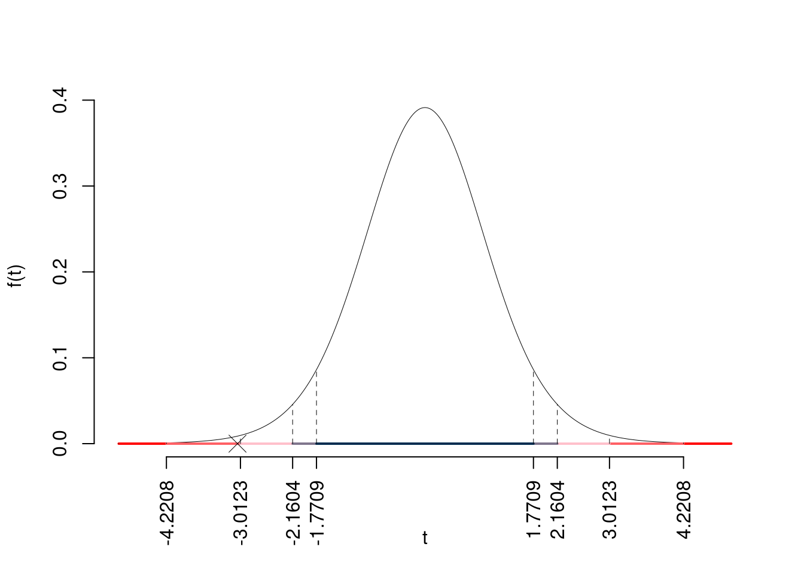
Il \(p_{\text{value}}\) è
\[ p_{\text{value}} = P(|T_{15-2}|>|-3.06|)=2P(T_{15-2}>3.06)=0.009117 \]
Attenzione il calcolo del \(p_\text{value}\) con la \(T\) è puramente illustrativo e non può essere riprodotto senza una calcolatrice statistica adeguata.\[ 0.001 < p_\text{value}= 0.009117 \leq 0.01 \]
Esercizio 8
Sia \(X\) il voto in matematica (in decimi) e sia \(Y\) il voto in statistica (in decimi). Si sono eseguite 5 osservazioni e i risultati ottenuti sono i seguenti.
| \(i\) | \(x_i\) | \(y_i\) |
|---|---|---|
| 1 | 5 | 6 |
| 2 | 6 | 7 |
| 3 | 7 | 6 |
| 4 | 8 | 9 |
| 5 | 4 | 5 |
1.a Calcolare i parametri \(\beta_{0}\) e \(\beta_{1}\) della retta di regressione in cui \(Y\) è spiegata attraverso \(X\).
| \(i\) | \(x_i\) | \(y_i\) | \(x_i^2\) | \(y_i^2\) | \(x_i\cdot y_i\) |
|---|---|---|---|---|---|
| 1 | 5 | 6.0 | 25 | 36.0 | 30.0 |
| 2 | 6 | 7.0 | 36 | 49.0 | 42.0 |
| 3 | 7 | 6.0 | 49 | 36.0 | 42.0 |
| 4 | 8 | 9.0 | 64 | 81.0 | 72.0 |
| 5 | 4 | 5.0 | 16 | 25.0 | 20.0 |
| Totale | 30 | 33.0 | 190 | 227.0 | 206.0 |
| Totale/n | 6 | 6.6 | 38 | 45.4 | 41.2 |
\[\begin{eqnarray*} \bar x &=&\frac 1 n\sum_{i=1}^n x_i = \frac {1}{ 5 } 30 = 6 \\ \bar y &=&\frac 1 n\sum_{i=1}^n y_i = \frac {1}{ 5 } 33 = 6.6 \\ \hat\sigma_X^2&=&\frac 1 n\sum_{i=1}^n x_i^2-\bar x^2=\frac {1}{ 5 } 190 - 6 ^2= 2 \\ \hat\sigma_Y^2&=&\frac 1 n\sum_{i=1}^n y_i^2-\bar y^2=\frac {1}{ 5 } 227 - 6.6 ^2= 1.84 \\ \text{cov}(X,Y)&=&\frac 1 n\sum_{i=1}^n x_i~y_i-\bar x\bar y=\frac {1}{ 5 } 206 - 6 \cdot 6.6 = 1.6 \\ \hat\beta_1 &=& \frac{\text{cov}(X,Y)}{\hat\sigma_X^2} \\ &=& \frac{ 1.6 }{ 2 } = 0.8 \\ \hat\beta_0 &=& \bar y - \hat\beta_1 \bar x\\ &=& 6.6 - 0.8 \times 6 = 1.8 \end{eqnarray*}\]
1.b Valutare la bontà di adattamento del modello precedente.
\[\begin{eqnarray*} r&=&\frac{\text{cov}(X,Y)}{\sigma_X\sigma_Y}=\frac{ 1.6 }{ 1.414 \times 1.356 }= 0.8341 \\r^2&=& 0.6957 < 0.75 \end{eqnarray*}\] Il modello non si adatta bene ai dati.
1.c Fornire una interpretazione dei parametri della retta di regressione.
I parametri della retta di regressione sono \(\beta_{0}\) e \(\beta_{1}\). Il primo, \(\beta_{0},\) rappresenta l’intercetta della retta, ovvero il punto in cui la retta interseca l’asse delle ordinate. Il secondo parametro, \(\beta_{1}\), rappresenta la pendenza della retta (chiamato anche coefficiente angolare), ovvero l’incremento verticale corrispondente a un incremento orizzontale unitario e coincide, perciò, con la tangente dell’angolo compreso fra la retta e l’asse delle ascisse.
In questo caso, la variazione percentuale della pressione sistolica, secondo il modello stimato, è dato da \[Y= 1.8 + 0.8 X\]
ossia, è composto da un quantitativo fisso di \(1.8\) di voto quando il voto di matematica è zero (\(X=0\)) che in linea generale non ha molto senso e quindi non è interpretabile chiaramente, a cui si aggiungono \(0.8\) punti per ogni unità di voto di matematica aggiuntivo.
1.d Determinare il residuo per un voto di matematica uguale 6, ossia per \(x=6\).
\[\begin{eqnarray*} \hat y_i &=&\hat\beta_0+\hat\beta_1 x_i=\\ &=& 1.8 + 0.8 \times 6 = 6.6 \\ \hat \varepsilon_i &=& y_i-\hat y_i\\ &=& 7 - 6.6 = 0.4 \end{eqnarray*}\]
1.e
Verificare
l’ipotesi che la pendenza della retta di regressione sia uguale a
zero contro l’alternativa che sia maggiore di zero.
\[\begin{eqnarray*} \hat{\sigma_\varepsilon}^2&=&(1-r^2)\hat\sigma_Y^2\\ &=& (1- 0.6957 )\times 1.84 \\ &=& 0.56 \\ S_\varepsilon^2 &=& \frac{n} {n-2} \hat{\sigma_\varepsilon}^2\\ &=& \frac{ 5 } { 5 -2} \hat{\sigma_\varepsilon}^2 \\ &=& \frac{ 5 } { 5 -2} \times 0.56 = 0.9333 \end{eqnarray*}\]
E quindi\[\begin{eqnarray*} V(\hat\beta_{1}) &=& \frac{\sigma_{\varepsilon}^{2}} {n \hat{\sigma}^{2}_{X}} \\ \widehat{V(\hat\beta_{1})} &=& \frac{S_{\varepsilon}^{2}} {n \hat{\sigma}^{2}_{X}} \\ &=& \frac{ 0.9333 } { 5 \times 2 } = 0.09333 \\ \widehat{SE(\hat\beta_{1})} &=& \sqrt{ 0.09333 }\\ &=& 0.3055 \end{eqnarray*}\]
\(\fbox{A}\) FORMULAZIONE DELLE IPOTESI
\[\begin{cases} H_0: \beta_1 = \beta_{1;H_0}=0 \\ H_1: \beta_1 \neq \beta_{1;H_0}=0 \end{cases}\]
\(\fbox{B}\) SCELTA E CALCOLO STATISTICA-TEST, \(T\) Test su un coefficiente di regressione: \(\Rightarrow\) t-Test.
\[\begin{eqnarray*} \frac{\hat\beta_{ 1 } - \beta_{ 1 ;H_0}} {\widehat{SE(\hat\beta_{ 1 })}}&\sim&t_{n-2}\\ t_{\text{obs}} &=& \frac{ ( 0.8 - 0 )} { 0.3055 } = 2.619 \, . \end{eqnarray*}\]
\(\fbox{C}\) CONCLUSIONE
Siccome \(H_1\) è bilaterale, considereremo \(\alpha/2\), anziché \(\alpha\)
\(\alpha=0.1, 0.05, 0.01, 0.001\) e quindi \(\alpha/2=0.05, 0.025, 0.005, 0.0005\)
I valori critici sono
\(t_{5-2;0.05}=2.3534\); \(t_{5-2;0.025}=3.1824\); \(t_{5-2;0.005}=5.8409\); \(t_{5-2;0.0005}=12.924\)
Siccome \(2.3534<|t_\text{obs}|=2.6186<3.1824\), indecisione sul rifiuto di \(H_0\) al 10%,
\(0.05<p_\text{value}<0.1\), marginalmente significativo \(\fbox{.}\).
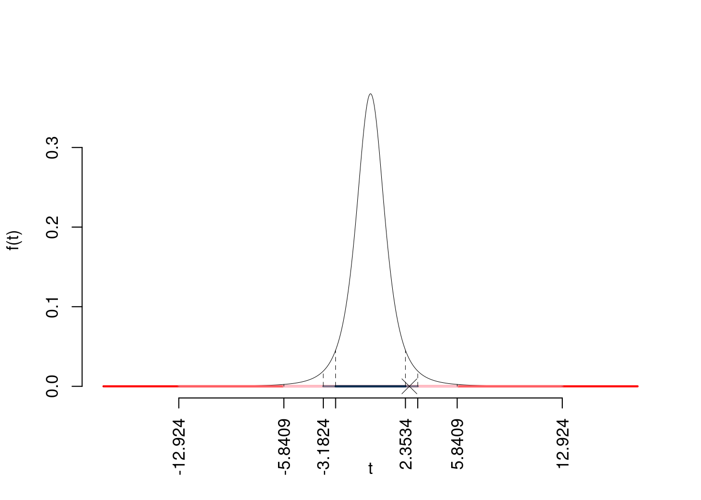
Il \(p_{\text{value}}\) è
\[ p_{\text{value}} = P(|T_{5-2}|>|2.62|)=2P(T_{5-2}>2.62)=0.079096 \]
Attenzione il calcolo del \(p_\text{value}\) con la \(T\) è puramente illustrativo e non può essere riprodotto senza una calcolatrice statistica adeguata.\[ 0.05 < p_\text{value}= 0.079096 \leq 0.1 \]